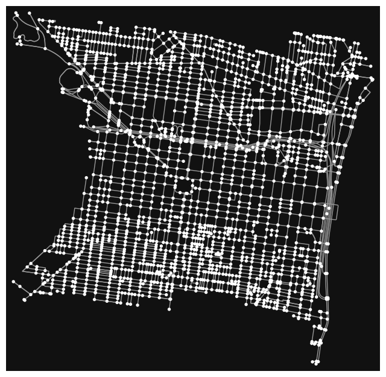

import pandas as pd
import geopandas as gpd
import numpy as np
import hvplot.pandas
import altair as alt
import matplotlib.pyplot as plt
import rasterio as rio
import osmnx as ox
pd.options.display.max_columns = 999
# Hide warnings due to issue in shapely package
# See: https://github.com/shapely/shapely/issues/1345
np.seterr(invalid="ignore");Street Networks & Web Scraping
Part 1: Visualizing crash data in Philadelphia
In this section, you will use osmnx to analyze the crash incidence in Center City.
Part 2: Scraping Craigslist
In this section, you will use Selenium and BeautifulSoup to scrape data for hundreds of apartments from Philadelphia’s Craigslist portal.
Part 1: Visualizing crash data in Philadelphia
1.1 Load the geometry for the region being analyzed We’ll analyze crashes in the “Central” planning district in Philadelphia, a rough approximation for Center City. Planning districts can be loaded from Open Data Philly. Read the data into a GeoDataFrame using the following link:
http://data.phl.opendata.arcgis.com/datasets/0960ea0f38f44146bb562f2b212075aa_0.geojson
Select the “Central” district and extract the geometry polygon for only this district. After this part, you should have a polygon variable of type shapely.geometry.polygon.Polygon
CPD = gpd.read_file("http://data.phl.opendata.arcgis.com/datasets/0960ea0f38f44146bb562f2b212075aa_0.geojson")
#CPD = ox.geocode_to_gdf("http://data.phl.opendata.arcgis.com/datasets/0960ea0f38f44146bb562f2b212075aa_0.geojson")
CPD = CPD[CPD["ABBREV"] == "CTR"]
CPD| OBJECTID_1 | OBJECTID | DIST_NAME | ABBREV | Shape__Area | Shape__Length | PlanningDist | DaytimePop | geometry | |
|---|---|---|---|---|---|---|---|---|---|
| 3 | 4 | 9 | Central | CTR | 1.782880e+08 | 71405.14345 | NaN | NaN | POLYGON ((-75.14791 39.96733, -75.14715 39.967... |
Phillyox = ox.geocode_to_gdf("Philadelphia, PA")
Phillyox.crs<Geographic 2D CRS: EPSG:4326>
Name: WGS 84
Axis Info [ellipsoidal]:
- Lat[north]: Geodetic latitude (degree)
- Lon[east]: Geodetic longitude (degree)
Area of Use:
- name: World.
- bounds: (-180.0, -90.0, 180.0, 90.0)
Datum: World Geodetic System 1984 ensemble
- Ellipsoid: WGS 84
- Prime Meridian: Greenwich1.2 Get the street network graph
Use OSMnx to create a network graph (of type ‘drive’) from your polygon boundary in 1.1.
ax = ox.project_gdf(CPD).plot(fc="lightgreen", ec="black")
ax.set_axis_off()ax = CPD.to_crs(epsg=2272).plot(facecolor="none", edgecolor="black")
ax.set_axis_off()streets = ox.features_from_place("Philadelphia, PA", tags={"highway": True})streets.head(6)| highway | geometry | traffic_signals | traffic_signals:direction | railway | crossing | ref | noref | noexit | ref:left | ref:right | old_ref | disused:railway | stop | name | crossing:markings | direction | traffic_calming | tactile_paving | access | source | crossing_ref | bicycle | description | foot | horse | motor_vehicle | addr:city | addr:housenumber | addr:postcode | addr:state | addr:street | website | note | crossing:island | proposed:junction | supervised | except | proposed:highway | ford | ele | gnis:feature_id | bench | bus | covered | network | network:wikidata | operator | public_transport | shelter | kerb | junction | gate | parking | wheelchair | network:wikipedia | indoor | level | fixme | route_ref | local_ref | designation | leisure | aeroway | maxheight | heritage | heritage:operator | ref:nrhp | material | bin | lit | traffic_signals:sound | lamp_type | departures_board | capacity | button_operated | layer | opening_hours | surface | traffic_signals:vibration | internet_access | route_ref_1 | landuse | alt_name | lamp_mount | traffic_sign | operator:wikidata | short_name | brand | brand:wikidata | tram | motor_vehicle:conditional | hgv | tourism | trolleybus | network:short | man_made | flashing_lights | abandoned | not:network:wikidata | support | traffic_signals:countdown | historic | cycleway | informal | advertising | check_date:crossing | nodes | oneway | tiger:cfcc | tiger:name_base | tiger:name_type | tiger:reviewed | tiger:zip_left | tiger:zip_right | lane_markings | lanes | tiger:name_direction_prefix | tiger:separated | tiger:source | tiger:tlid | tiger:zip_left_1 | service | parking:lane:both | sidewalk | cycleway:right | old_ref_legislative | ref:penndot | tiger:name_direction_suffix | destination:ref | turn:lanes | destination | toll | destination:ref:to | maxspeed | source:hgv | source:ref:penndot | smoothness | bridge | junction:ref | destination:lanes | width | cycleway:both | cycleway:both:buffer | NHS | cycleway:right:buffer | check_date:smoothness | destination:street | wikipedia | lanes:backward | lanes:forward | turn:lanes:backward | tracktype | turn | maxspeed:advisory | psv | destination:symbol | tunnel | noname | maxweight:signed | tiger:name_base_1 | source:width | rcn_ref | abandoned:railway | parking:lane:left | parking:lane:left:parallel | parking:lane:right | cycleway:left | embedded_rails | name_1 | tiger:name_base_2 | tiger:name_type_1 | destination:ref:lanes | old_ref:legislative | destination:to | tiger:zip_left_2 | tiger:zip_right_1 | tiger:zip_right_2 | cycleway:left:buffer | cycleway:right:lane | source:oneway | sidewalk:both | lcn | parking:lane:right:parallel | maxspeed:type | parking:both | parking:orientation | sidewalk:both:surface | centre_turn_lane | tiger:zip_left_3 | tiger:zip_left_4 | parking:left | parking:right | parking:right:orientation | sidewalk:left | sidewalk:right | maxwidth | old_name | maxspeed:backward | old_railway_operator | bicycle:backward:conditional | bicycle:forward:conditional | name:etymology:wikidata | oneway:bicycle | construction | wikidata | incline | check_date:surface | destination:street:lanes | parking:both:orientation | access:hgv | maxweight | FIXME | lanes:both_ways | turn:lanes:both_ways | turn:lanes:forward | tiger:zip_right_3 | source:lanes | restriction:hgv | maxspeed:forward | tiger:name_direction_prefix_1 | parking:lane:both:parallel | note:lanes | name_2 | tiger:name_direction_prefix_2 | tiger:name_type_2 | tiger:zip_right_4 | motorcar | tiger:name_direction | note:old_railway_operator | toll:backward | toll:forward | bicycle:forward | parking:condition:right | bicycle:backward | maxwidth:physical | tiger:name_base_3 | tiger:name_direction_prefix_3 | tiger:name_type_3 | source:boundary | segregated | bridge:name | start_date | name2 | created_by | motorroad | footway | maxspeed:variable | tiger:county | destination:ref:to:lanes | area | handrail | ramp | parking:left:markings | parking:left:orientation | step_count | sac_scale | trail_visibility | trolley_wire | voltage | highspeed | check_date | base_material_values | bridge:structure | embankment | destination:lanes:forward | destination:ref:to:lanes:forward | destination:ref:lanes:forward | destination:ref:to:lanes:backward | disused:cycleway:both | destination:lanes:backward | opening_date | lanes:bus | mtb:scale | access:lanes:forward | psv:lanes:forward | placement:backward | canoe | surface:condition | destination:ref:forward | destination:street:forward | tiger:zip | unsigned_ref | hgv:lanes | shoulder | placement | abandoned:highway | destination:ref:lanes:backward | proposed | bicycle:lane | loc_name | ramp:wheelchair | mtb:scale:imba | mtb:scale:uphill | disused:cycleway:right | goods | cutting | cycleway:left:oneway | parking:condition:left | parking:condition:left:time_interval | ski | snowmobile | emergency | source:name | name:en | HFCS | NJDOT_SRI | bridge:movable | hgv:state_network | source:hgv:state_network | change:lanes:backward | change:lanes:forward | parking:lane:right:diagonal | levels | postal_code | location | length | sport | closed | condition | danger | danger_1 | hazard | cycleway:both:width | parking:lane:left:diagonal | PARK_NAME | SHAPE_LENG | TRL_LENGTH | parking:condition:both | proposed:lanes | proposed:lanes:forward | proposed:turn:lanes:forward | proposed:lanes:backward | proposed:turn:lanes:backward | placement:forward | destination:street:backward | destination:street:lanes:forward | destination:street:lanes:backward | name:backward | name:forward | cycleway:buffer | turn:backward | golf | gauge | parking:condition:both:time_interval | train | horse_scale | dog | turn:forward | surface:lanes:backward | surface:lanes:forward | bus:backward | hgv:backward | motorcar:backward | motorroad:backward | artist:website | artist:wikidata | artist_name | not:name | golf_cart | steps | comment | historic:railway | disused:cycleway:left | oneway:bus | stairs | sidewalk:left:surface | sidewalk:right:surface | truck | stroller | conveying | check_date:handrail | ways | type | ||
|---|---|---|---|---|---|---|---|---|---|---|---|---|---|---|---|---|---|---|---|---|---|---|---|---|---|---|---|---|---|---|---|---|---|---|---|---|---|---|---|---|---|---|---|---|---|---|---|---|---|---|---|---|---|---|---|---|---|---|---|---|---|---|---|---|---|---|---|---|---|---|---|---|---|---|---|---|---|---|---|---|---|---|---|---|---|---|---|---|---|---|---|---|---|---|---|---|---|---|---|---|---|---|---|---|---|---|---|---|---|---|---|---|---|---|---|---|---|---|---|---|---|---|---|---|---|---|---|---|---|---|---|---|---|---|---|---|---|---|---|---|---|---|---|---|---|---|---|---|---|---|---|---|---|---|---|---|---|---|---|---|---|---|---|---|---|---|---|---|---|---|---|---|---|---|---|---|---|---|---|---|---|---|---|---|---|---|---|---|---|---|---|---|---|---|---|---|---|---|---|---|---|---|---|---|---|---|---|---|---|---|---|---|---|---|---|---|---|---|---|---|---|---|---|---|---|---|---|---|---|---|---|---|---|---|---|---|---|---|---|---|---|---|---|---|---|---|---|---|---|---|---|---|---|---|---|---|---|---|---|---|---|---|---|---|---|---|---|---|---|---|---|---|---|---|---|---|---|---|---|---|---|---|---|---|---|---|---|---|---|---|---|---|---|---|---|---|---|---|---|---|---|---|---|---|---|---|---|---|---|---|---|---|---|---|---|---|---|---|---|---|---|---|---|---|---|---|---|---|---|---|---|---|---|---|---|---|---|---|---|---|---|---|---|---|---|---|---|---|---|---|---|---|---|---|---|---|---|---|---|---|---|---|---|---|---|---|---|---|---|---|---|---|---|---|---|
| element_type | osmid | ||||||||||||||||||||||||||||||||||||||||||||||||||||||||||||||||||||||||||||||||||||||||||||||||||||||||||||||||||||||||||||||||||||||||||||||||||||||||||||||||||||||||||||||||||||||||||||||||||||||||||||||||||||||||||||||||||||||||||||||||||||||||||||||||||||||||||||||||||||||||||||||||||||||||||||||||||||||||||||||||||||||||||||||||||||||||||||||||||||||||||||||||||||||
| node | 109727831 | traffic_signals | POINT (-75.15328 40.02996) | NaN | NaN | NaN | NaN | NaN | NaN | NaN | NaN | NaN | NaN | NaN | NaN | NaN | NaN | NaN | NaN | NaN | NaN | NaN | NaN | NaN | NaN | NaN | NaN | NaN | NaN | NaN | NaN | NaN | NaN | NaN | NaN | NaN | NaN | NaN | NaN | NaN | NaN | NaN | NaN | NaN | NaN | NaN | NaN | NaN | NaN | NaN | NaN | NaN | NaN | NaN | NaN | NaN | NaN | NaN | NaN | NaN | NaN | NaN | NaN | NaN | NaN | NaN | NaN | NaN | NaN | NaN | NaN | NaN | NaN | NaN | NaN | NaN | NaN | NaN | NaN | NaN | NaN | NaN | NaN | NaN | NaN | NaN | NaN | NaN | NaN | NaN | NaN | NaN | NaN | NaN | NaN | NaN | NaN | NaN | NaN | NaN | NaN | NaN | NaN | NaN | NaN | NaN | NaN | NaN | NaN | NaN | NaN | NaN | NaN | NaN | NaN | NaN | NaN | NaN | NaN | NaN | NaN | NaN | NaN | NaN | NaN | NaN | NaN | NaN | NaN | NaN | NaN | NaN | NaN | NaN | NaN | NaN | NaN | NaN | NaN | NaN | NaN | NaN | NaN | NaN | NaN | NaN | NaN | NaN | NaN | NaN | NaN | NaN | NaN | NaN | NaN | NaN | NaN | NaN | NaN | NaN | NaN | NaN | NaN | NaN | NaN | NaN | NaN | NaN | NaN | NaN | NaN | NaN | NaN | NaN | NaN | NaN | NaN | NaN | NaN | NaN | NaN | NaN | NaN | NaN | NaN | NaN | NaN | NaN | NaN | NaN | NaN | NaN | NaN | NaN | NaN | NaN | NaN | NaN | NaN | NaN | NaN | NaN | NaN | NaN | NaN | NaN | NaN | NaN | NaN | NaN | NaN | NaN | NaN | NaN | NaN | NaN | NaN | NaN | NaN | NaN | NaN | NaN | NaN | NaN | NaN | NaN | NaN | NaN | NaN | NaN | NaN | NaN | NaN | NaN | NaN | NaN | NaN | NaN | NaN | NaN | NaN | NaN | NaN | NaN | NaN | NaN | NaN | NaN | NaN | NaN | NaN | NaN | NaN | NaN | NaN | NaN | NaN | NaN | NaN | NaN | NaN | NaN | NaN | NaN | NaN | NaN | NaN | NaN | NaN | NaN | NaN | NaN | NaN | NaN | NaN | NaN | NaN | NaN | NaN | NaN | NaN | NaN | NaN | NaN | NaN | NaN | NaN | NaN | NaN | NaN | NaN | NaN | NaN | NaN | NaN | NaN | NaN | NaN | NaN | NaN | NaN | NaN | NaN | NaN | NaN | NaN | NaN | NaN | NaN | NaN | NaN | NaN | NaN | NaN | NaN | NaN | NaN | NaN | NaN | NaN | NaN | NaN | NaN | NaN | NaN | NaN | NaN | NaN | NaN | NaN | NaN | NaN | NaN | NaN | NaN | NaN | NaN | NaN | NaN | NaN | NaN | NaN | NaN | NaN | NaN | NaN | NaN | NaN | NaN | NaN | NaN | NaN | NaN | NaN | NaN | NaN | NaN | NaN | NaN | NaN | NaN | NaN | NaN | NaN | NaN | NaN | NaN | NaN | NaN | NaN | NaN | NaN | NaN | NaN | NaN |
| 109727914 | traffic_signals | POINT (-75.13837 40.02803) | signal | NaN | NaN | NaN | NaN | NaN | NaN | NaN | NaN | NaN | NaN | NaN | NaN | NaN | NaN | NaN | NaN | NaN | NaN | NaN | NaN | NaN | NaN | NaN | NaN | NaN | NaN | NaN | NaN | NaN | NaN | NaN | NaN | NaN | NaN | NaN | NaN | NaN | NaN | NaN | NaN | NaN | NaN | NaN | NaN | NaN | NaN | NaN | NaN | NaN | NaN | NaN | NaN | NaN | NaN | NaN | NaN | NaN | NaN | NaN | NaN | NaN | NaN | NaN | NaN | NaN | NaN | NaN | NaN | NaN | NaN | NaN | NaN | NaN | NaN | NaN | NaN | NaN | NaN | NaN | NaN | NaN | NaN | NaN | NaN | NaN | NaN | NaN | NaN | NaN | NaN | NaN | NaN | NaN | NaN | NaN | NaN | NaN | NaN | NaN | NaN | NaN | NaN | NaN | NaN | NaN | NaN | NaN | NaN | NaN | NaN | NaN | NaN | NaN | NaN | NaN | NaN | NaN | NaN | NaN | NaN | NaN | NaN | NaN | NaN | NaN | NaN | NaN | NaN | NaN | NaN | NaN | NaN | NaN | NaN | NaN | NaN | NaN | NaN | NaN | NaN | NaN | NaN | NaN | NaN | NaN | NaN | NaN | NaN | NaN | NaN | NaN | NaN | NaN | NaN | NaN | NaN | NaN | NaN | NaN | NaN | NaN | NaN | NaN | NaN | NaN | NaN | NaN | NaN | NaN | NaN | NaN | NaN | NaN | NaN | NaN | NaN | NaN | NaN | NaN | NaN | NaN | NaN | NaN | NaN | NaN | NaN | NaN | NaN | NaN | NaN | NaN | NaN | NaN | NaN | NaN | NaN | NaN | NaN | NaN | NaN | NaN | NaN | NaN | NaN | NaN | NaN | NaN | NaN | NaN | NaN | NaN | NaN | NaN | NaN | NaN | NaN | NaN | NaN | NaN | NaN | NaN | NaN | NaN | NaN | NaN | NaN | NaN | NaN | NaN | NaN | NaN | NaN | NaN | NaN | NaN | NaN | NaN | NaN | NaN | NaN | NaN | NaN | NaN | NaN | NaN | NaN | NaN | NaN | NaN | NaN | NaN | NaN | NaN | NaN | NaN | NaN | NaN | NaN | NaN | NaN | NaN | NaN | NaN | NaN | NaN | NaN | NaN | NaN | NaN | NaN | NaN | NaN | NaN | NaN | NaN | NaN | NaN | NaN | NaN | NaN | NaN | NaN | NaN | NaN | NaN | NaN | NaN | NaN | NaN | NaN | NaN | NaN | NaN | NaN | NaN | NaN | NaN | NaN | NaN | NaN | NaN | NaN | NaN | NaN | NaN | NaN | NaN | NaN | NaN | NaN | NaN | NaN | NaN | NaN | NaN | NaN | NaN | NaN | NaN | NaN | NaN | NaN | NaN | NaN | NaN | NaN | NaN | NaN | NaN | NaN | NaN | NaN | NaN | NaN | NaN | NaN | NaN | NaN | NaN | NaN | NaN | NaN | NaN | NaN | NaN | NaN | NaN | NaN | NaN | NaN | NaN | NaN | NaN | NaN | NaN | NaN | NaN | NaN | NaN | NaN | NaN | NaN | NaN | NaN | NaN | NaN | NaN | NaN | NaN | NaN | NaN | |
| 109727992 | traffic_signals | POINT (-75.14616 40.02904) | signal | NaN | NaN | NaN | NaN | NaN | NaN | NaN | NaN | NaN | NaN | NaN | NaN | NaN | NaN | NaN | NaN | NaN | NaN | NaN | NaN | NaN | NaN | NaN | NaN | NaN | NaN | NaN | NaN | NaN | NaN | NaN | NaN | NaN | NaN | NaN | NaN | NaN | NaN | NaN | NaN | NaN | NaN | NaN | NaN | NaN | NaN | NaN | NaN | NaN | NaN | NaN | NaN | NaN | NaN | NaN | NaN | NaN | NaN | NaN | NaN | NaN | NaN | NaN | NaN | NaN | NaN | NaN | NaN | NaN | NaN | NaN | NaN | NaN | NaN | NaN | NaN | NaN | NaN | NaN | NaN | NaN | NaN | NaN | NaN | NaN | NaN | NaN | NaN | NaN | NaN | NaN | NaN | NaN | NaN | NaN | NaN | NaN | NaN | NaN | NaN | NaN | NaN | NaN | NaN | NaN | NaN | NaN | NaN | NaN | NaN | NaN | NaN | NaN | NaN | NaN | NaN | NaN | NaN | NaN | NaN | NaN | NaN | NaN | NaN | NaN | NaN | NaN | NaN | NaN | NaN | NaN | NaN | NaN | NaN | NaN | NaN | NaN | NaN | NaN | NaN | NaN | NaN | NaN | NaN | NaN | NaN | NaN | NaN | NaN | NaN | NaN | NaN | NaN | NaN | NaN | NaN | NaN | NaN | NaN | NaN | NaN | NaN | NaN | NaN | NaN | NaN | NaN | NaN | NaN | NaN | NaN | NaN | NaN | NaN | NaN | NaN | NaN | NaN | NaN | NaN | NaN | NaN | NaN | NaN | NaN | NaN | NaN | NaN | NaN | NaN | NaN | NaN | NaN | NaN | NaN | NaN | NaN | NaN | NaN | NaN | NaN | NaN | NaN | NaN | NaN | NaN | NaN | NaN | NaN | NaN | NaN | NaN | NaN | NaN | NaN | NaN | NaN | NaN | NaN | NaN | NaN | NaN | NaN | NaN | NaN | NaN | NaN | NaN | NaN | NaN | NaN | NaN | NaN | NaN | NaN | NaN | NaN | NaN | NaN | NaN | NaN | NaN | NaN | NaN | NaN | NaN | NaN | NaN | NaN | NaN | NaN | NaN | NaN | NaN | NaN | NaN | NaN | NaN | NaN | NaN | NaN | NaN | NaN | NaN | NaN | NaN | NaN | NaN | NaN | NaN | NaN | NaN | NaN | NaN | NaN | NaN | NaN | NaN | NaN | NaN | NaN | NaN | NaN | NaN | NaN | NaN | NaN | NaN | NaN | NaN | NaN | NaN | NaN | NaN | NaN | NaN | NaN | NaN | NaN | NaN | NaN | NaN | NaN | NaN | NaN | NaN | NaN | NaN | NaN | NaN | NaN | NaN | NaN | NaN | NaN | NaN | NaN | NaN | NaN | NaN | NaN | NaN | NaN | NaN | NaN | NaN | NaN | NaN | NaN | NaN | NaN | NaN | NaN | NaN | NaN | NaN | NaN | NaN | NaN | NaN | NaN | NaN | NaN | NaN | NaN | NaN | NaN | NaN | NaN | NaN | NaN | NaN | NaN | NaN | NaN | NaN | NaN | NaN | NaN | NaN | NaN | NaN | NaN | NaN | NaN | NaN | NaN | NaN | NaN | NaN | NaN | |
| 109727997 | traffic_signals | POINT (-75.14686 40.02914) | NaN | NaN | NaN | NaN | NaN | NaN | NaN | NaN | NaN | NaN | NaN | NaN | NaN | NaN | NaN | NaN | NaN | NaN | NaN | NaN | NaN | NaN | NaN | NaN | NaN | NaN | NaN | NaN | NaN | NaN | NaN | NaN | NaN | NaN | NaN | NaN | NaN | NaN | NaN | NaN | NaN | NaN | NaN | NaN | NaN | NaN | NaN | NaN | NaN | NaN | NaN | NaN | NaN | NaN | NaN | NaN | NaN | NaN | NaN | NaN | NaN | NaN | NaN | NaN | NaN | NaN | NaN | NaN | NaN | NaN | NaN | NaN | NaN | NaN | NaN | NaN | NaN | NaN | NaN | NaN | NaN | NaN | NaN | NaN | NaN | NaN | NaN | NaN | NaN | NaN | NaN | NaN | NaN | NaN | NaN | NaN | NaN | NaN | NaN | NaN | NaN | NaN | NaN | NaN | NaN | NaN | NaN | NaN | NaN | NaN | NaN | NaN | NaN | NaN | NaN | NaN | NaN | NaN | NaN | NaN | NaN | NaN | NaN | NaN | NaN | NaN | NaN | NaN | NaN | NaN | NaN | NaN | NaN | NaN | NaN | NaN | NaN | NaN | NaN | NaN | NaN | NaN | NaN | NaN | NaN | NaN | NaN | NaN | NaN | NaN | NaN | NaN | NaN | NaN | NaN | NaN | NaN | NaN | NaN | NaN | NaN | NaN | NaN | NaN | NaN | NaN | NaN | NaN | NaN | NaN | NaN | NaN | NaN | NaN | NaN | NaN | NaN | NaN | NaN | NaN | NaN | NaN | NaN | NaN | NaN | NaN | NaN | NaN | NaN | NaN | NaN | NaN | NaN | NaN | NaN | NaN | NaN | NaN | NaN | NaN | NaN | NaN | NaN | NaN | NaN | NaN | NaN | NaN | NaN | NaN | NaN | NaN | NaN | NaN | NaN | NaN | NaN | NaN | NaN | NaN | NaN | NaN | NaN | NaN | NaN | NaN | NaN | NaN | NaN | NaN | NaN | NaN | NaN | NaN | NaN | NaN | NaN | NaN | NaN | NaN | NaN | NaN | NaN | NaN | NaN | NaN | NaN | NaN | NaN | NaN | NaN | NaN | NaN | NaN | NaN | NaN | NaN | NaN | NaN | NaN | NaN | NaN | NaN | NaN | NaN | NaN | NaN | NaN | NaN | NaN | NaN | NaN | NaN | NaN | NaN | NaN | NaN | NaN | NaN | NaN | NaN | NaN | NaN | NaN | NaN | NaN | NaN | NaN | NaN | NaN | NaN | NaN | NaN | NaN | NaN | NaN | NaN | NaN | NaN | NaN | NaN | NaN | NaN | NaN | NaN | NaN | NaN | NaN | NaN | NaN | NaN | NaN | NaN | NaN | NaN | NaN | NaN | NaN | NaN | NaN | NaN | NaN | NaN | NaN | NaN | NaN | NaN | NaN | NaN | NaN | NaN | NaN | NaN | NaN | NaN | NaN | NaN | NaN | NaN | NaN | NaN | NaN | NaN | NaN | NaN | NaN | NaN | NaN | NaN | NaN | NaN | NaN | NaN | NaN | NaN | NaN | NaN | NaN | NaN | NaN | NaN | NaN | NaN | NaN | NaN | NaN | NaN | NaN | NaN | NaN | NaN | NaN | |
| 109728089 | turning_circle | POINT (-74.99562 40.10542) | NaN | NaN | NaN | NaN | NaN | NaN | NaN | NaN | NaN | NaN | NaN | NaN | NaN | NaN | NaN | NaN | NaN | NaN | NaN | NaN | NaN | NaN | NaN | NaN | NaN | NaN | NaN | NaN | NaN | NaN | NaN | NaN | NaN | NaN | NaN | NaN | NaN | NaN | NaN | NaN | NaN | NaN | NaN | NaN | NaN | NaN | NaN | NaN | NaN | NaN | NaN | NaN | NaN | NaN | NaN | NaN | NaN | NaN | NaN | NaN | NaN | NaN | NaN | NaN | NaN | NaN | NaN | NaN | NaN | NaN | NaN | NaN | NaN | NaN | NaN | NaN | NaN | NaN | NaN | NaN | NaN | NaN | NaN | NaN | NaN | NaN | NaN | NaN | NaN | NaN | NaN | NaN | NaN | NaN | NaN | NaN | NaN | NaN | NaN | NaN | NaN | NaN | NaN | NaN | NaN | NaN | NaN | NaN | NaN | NaN | NaN | NaN | NaN | NaN | NaN | NaN | NaN | NaN | NaN | NaN | NaN | NaN | NaN | NaN | NaN | NaN | NaN | NaN | NaN | NaN | NaN | NaN | NaN | NaN | NaN | NaN | NaN | NaN | NaN | NaN | NaN | NaN | NaN | NaN | NaN | NaN | NaN | NaN | NaN | NaN | NaN | NaN | NaN | NaN | NaN | NaN | NaN | NaN | NaN | NaN | NaN | NaN | NaN | NaN | NaN | NaN | NaN | NaN | NaN | NaN | NaN | NaN | NaN | NaN | NaN | NaN | NaN | NaN | NaN | NaN | NaN | NaN | NaN | NaN | NaN | NaN | NaN | NaN | NaN | NaN | NaN | NaN | NaN | NaN | NaN | NaN | NaN | NaN | NaN | NaN | NaN | NaN | NaN | NaN | NaN | NaN | NaN | NaN | NaN | NaN | NaN | NaN | NaN | NaN | NaN | NaN | NaN | NaN | NaN | NaN | NaN | NaN | NaN | NaN | NaN | NaN | NaN | NaN | NaN | NaN | NaN | NaN | NaN | NaN | NaN | NaN | NaN | NaN | NaN | NaN | NaN | NaN | NaN | NaN | NaN | NaN | NaN | NaN | NaN | NaN | NaN | NaN | NaN | NaN | NaN | NaN | NaN | NaN | NaN | NaN | NaN | NaN | NaN | NaN | NaN | NaN | NaN | NaN | NaN | NaN | NaN | NaN | NaN | NaN | NaN | NaN | NaN | NaN | NaN | NaN | NaN | NaN | NaN | NaN | NaN | NaN | NaN | NaN | NaN | NaN | NaN | NaN | NaN | NaN | NaN | NaN | NaN | NaN | NaN | NaN | NaN | NaN | NaN | NaN | NaN | NaN | NaN | NaN | NaN | NaN | NaN | NaN | NaN | NaN | NaN | NaN | NaN | NaN | NaN | NaN | NaN | NaN | NaN | NaN | NaN | NaN | NaN | NaN | NaN | NaN | NaN | NaN | NaN | NaN | NaN | NaN | NaN | NaN | NaN | NaN | NaN | NaN | NaN | NaN | NaN | NaN | NaN | NaN | NaN | NaN | NaN | NaN | NaN | NaN | NaN | NaN | NaN | NaN | NaN | NaN | NaN | NaN | NaN | NaN | NaN | NaN | NaN | NaN | NaN | NaN | NaN | NaN | |
| 109728114 | traffic_signals | POINT (-75.13897 40.03285) | signal | NaN | NaN | NaN | NaN | NaN | NaN | NaN | NaN | NaN | NaN | NaN | NaN | NaN | NaN | NaN | NaN | NaN | NaN | NaN | NaN | NaN | NaN | NaN | NaN | NaN | NaN | NaN | NaN | NaN | NaN | NaN | NaN | NaN | NaN | NaN | NaN | NaN | NaN | NaN | NaN | NaN | NaN | NaN | NaN | NaN | NaN | NaN | NaN | NaN | NaN | NaN | NaN | NaN | NaN | NaN | NaN | NaN | NaN | NaN | NaN | NaN | NaN | NaN | NaN | NaN | NaN | NaN | NaN | NaN | NaN | NaN | NaN | NaN | NaN | NaN | NaN | NaN | NaN | NaN | NaN | NaN | NaN | NaN | NaN | NaN | NaN | NaN | NaN | NaN | NaN | NaN | NaN | NaN | NaN | NaN | NaN | NaN | NaN | NaN | NaN | NaN | NaN | NaN | NaN | NaN | NaN | NaN | NaN | NaN | NaN | NaN | NaN | NaN | NaN | NaN | NaN | NaN | NaN | NaN | NaN | NaN | NaN | NaN | NaN | NaN | NaN | NaN | NaN | NaN | NaN | NaN | NaN | NaN | NaN | NaN | NaN | NaN | NaN | NaN | NaN | NaN | NaN | NaN | NaN | NaN | NaN | NaN | NaN | NaN | NaN | NaN | NaN | NaN | NaN | NaN | NaN | NaN | NaN | NaN | NaN | NaN | NaN | NaN | NaN | NaN | NaN | NaN | NaN | NaN | NaN | NaN | NaN | NaN | NaN | NaN | NaN | NaN | NaN | NaN | NaN | NaN | NaN | NaN | NaN | NaN | NaN | NaN | NaN | NaN | NaN | NaN | NaN | NaN | NaN | NaN | NaN | NaN | NaN | NaN | NaN | NaN | NaN | NaN | NaN | NaN | NaN | NaN | NaN | NaN | NaN | NaN | NaN | NaN | NaN | NaN | NaN | NaN | NaN | NaN | NaN | NaN | NaN | NaN | NaN | NaN | NaN | NaN | NaN | NaN | NaN | NaN | NaN | NaN | NaN | NaN | NaN | NaN | NaN | NaN | NaN | NaN | NaN | NaN | NaN | NaN | NaN | NaN | NaN | NaN | NaN | NaN | NaN | NaN | NaN | NaN | NaN | NaN | NaN | NaN | NaN | NaN | NaN | NaN | NaN | NaN | NaN | NaN | NaN | NaN | NaN | NaN | NaN | NaN | NaN | NaN | NaN | NaN | NaN | NaN | NaN | NaN | NaN | NaN | NaN | NaN | NaN | NaN | NaN | NaN | NaN | NaN | NaN | NaN | NaN | NaN | NaN | NaN | NaN | NaN | NaN | NaN | NaN | NaN | NaN | NaN | NaN | NaN | NaN | NaN | NaN | NaN | NaN | NaN | NaN | NaN | NaN | NaN | NaN | NaN | NaN | NaN | NaN | NaN | NaN | NaN | NaN | NaN | NaN | NaN | NaN | NaN | NaN | NaN | NaN | NaN | NaN | NaN | NaN | NaN | NaN | NaN | NaN | NaN | NaN | NaN | NaN | NaN | NaN | NaN | NaN | NaN | NaN | NaN | NaN | NaN | NaN | NaN | NaN | NaN | NaN | NaN | NaN | NaN | NaN | NaN | NaN | NaN | NaN | NaN | NaN | NaN |
CPDoutline = CPD.squeeze().geometry
CPDoutlineG_CPD = ox.graph_from_polygon(CPDoutline, network_type="drive")ox.plot_graph(ox.project_graph(G_CPD), node_size=0);
1.3 Convert your network graph edges to a GeoDataFrame
Use OSMnx to create a GeoDataFrame of the network edges in the graph object from part 1.2. The GeoDataFrame should contain the edges but not the nodes from the network.
CPD_edges = ox.graph_to_gdfs(G_CPD, edges=True, nodes=False)CPD_edges| osmid | oneway | name | highway | reversed | length | geometry | maxspeed | lanes | bridge | ref | tunnel | width | service | access | junction | |||
|---|---|---|---|---|---|---|---|---|---|---|---|---|---|---|---|---|---|---|
| u | v | key | ||||||||||||||||
| 109727439 | 109911666 | 0 | 132508434 | True | Bainbridge Street | residential | False | 44.137 | LINESTRING (-75.17104 39.94345, -75.17053 39.9... | NaN | NaN | NaN | NaN | NaN | NaN | NaN | NaN | NaN |
| 109727448 | 109727439 | 0 | 12109011 | True | South Colorado Street | residential | False | 109.484 | LINESTRING (-75.17125 39.94248, -75.17120 39.9... | NaN | NaN | NaN | NaN | NaN | NaN | NaN | NaN | NaN |
| 110034229 | 0 | 12159387 | True | Fitzwater Street | residential | False | 91.353 | LINESTRING (-75.17125 39.94248, -75.17137 39.9... | NaN | NaN | NaN | NaN | NaN | NaN | NaN | NaN | NaN | |
| 109727507 | 110024052 | 0 | 193364514 | True | Carpenter Street | residential | False | 53.208 | LINESTRING (-75.17196 39.93973, -75.17134 39.9... | NaN | NaN | NaN | NaN | NaN | NaN | NaN | NaN | NaN |
| 109728761 | 110274344 | 0 | 672312336 | True | Brown Street | residential | False | 58.270 | LINESTRING (-75.17317 39.96951, -75.17250 39.9... | 25 mph | NaN | NaN | NaN | NaN | NaN | NaN | NaN | NaN |
| ... | ... | ... | ... | ... | ... | ... | ... | ... | ... | ... | ... | ... | ... | ... | ... | ... | ... | ... |
| 11176163640 | 11176163648 | 1 | 1206065012 | False | NaN | living_street | False | 57.963 | LINESTRING (-75.16655 39.95896, -75.16633 39.9... | NaN | NaN | NaN | NaN | NaN | NaN | NaN | NaN | NaN |
| 5808113442 | 0 | 613950538 | False | Alexander Court | living_street | True | 37.086 | LINESTRING (-75.16655 39.95896, -75.16662 39.9... | NaN | NaN | NaN | NaN | NaN | NaN | NaN | NaN | NaN | |
| 11176163648 | 5808113443 | 0 | 613950538 | False | Alexander Court | living_street | False | 31.592 | LINESTRING (-75.16652 39.95909, -75.16646 39.9... | NaN | NaN | NaN | NaN | NaN | NaN | NaN | NaN | NaN |
| 11176163640 | 0 | 613950538 | False | Alexander Court | living_street | True | 14.738 | LINESTRING (-75.16652 39.95909, -75.16655 39.9... | NaN | NaN | NaN | NaN | NaN | NaN | NaN | NaN | NaN | |
| 1 | 1206065012 | False | NaN | living_street | True | 57.963 | LINESTRING (-75.16652 39.95909, -75.16630 39.9... | NaN | NaN | NaN | NaN | NaN | NaN | NaN | NaN | NaN |
3896 rows × 16 columns
1.4 Load PennDOT crash data
Data for crashes (of all types) for 2020, 2021, and 2022 in Philadelphia County is available at the following path:
./data/CRASH_PHILADELPHIA_XXXX.csv
You should see three separate files in the data/ folder. Use pandas to read each of the CSV files, and combine them into a single dataframe using pd.concat().
The data was downloaded for Philadelphia County from here.
crash2020 = pd.read_csv("./Data/CRASH_PHILADELPHIA_2020.csv")
crash2021 = pd.read_csv("./Data/CRASH_PHILADELPHIA_2021.csv")
crash2022 = pd.read_csv("./Data/CRASH_PHILADELPHIA_2022.csv")
crashDf = pd.concat([crash2020, crash2021, crash2022])
crashDf| CRN | ARRIVAL_TM | AUTOMOBILE_COUNT | BELTED_DEATH_COUNT | BELTED_SUSP_SERIOUS_INJ_COUNT | BICYCLE_COUNT | BICYCLE_DEATH_COUNT | BICYCLE_SUSP_SERIOUS_INJ_COUNT | BUS_COUNT | CHLDPAS_DEATH_COUNT | CHLDPAS_SUSP_SERIOUS_INJ_COUNT | COLLISION_TYPE | COMM_VEH_COUNT | CONS_ZONE_SPD_LIM | COUNTY | CRASH_MONTH | CRASH_YEAR | DAY_OF_WEEK | DEC_LAT | DEC_LONG | DISPATCH_TM | DISTRICT | DRIVER_COUNT_16YR | DRIVER_COUNT_17YR | DRIVER_COUNT_18YR | DRIVER_COUNT_19YR | DRIVER_COUNT_20YR | DRIVER_COUNT_50_64YR | DRIVER_COUNT_65_74YR | DRIVER_COUNT_75PLUS | EST_HRS_CLOSED | FATAL_COUNT | HEAVY_TRUCK_COUNT | HORSE_BUGGY_COUNT | HOUR_OF_DAY | ILLUMINATION | INJURY_COUNT | INTERSECT_TYPE | INTERSECTION_RELATED | LANE_CLOSED | LATITUDE | LN_CLOSE_DIR | LOCATION_TYPE | LONGITUDE | MAX_SEVERITY_LEVEL | MCYCLE_DEATH_COUNT | MCYCLE_SUSP_SERIOUS_INJ_COUNT | MOTORCYCLE_COUNT | MUNICIPALITY | NONMOTR_COUNT | NONMOTR_DEATH_COUNT | NONMOTR_SUSP_SERIOUS_INJ_COUNT | NTFY_HIWY_MAINT | PED_COUNT | PED_DEATH_COUNT | PED_SUSP_SERIOUS_INJ_COUNT | PERSON_COUNT | POLICE_AGCY | POSSIBLE_INJ_COUNT | RDWY_SURF_TYPE_CD | RELATION_TO_ROAD | ROAD_CONDITION | ROADWAY_CLEARED | SCH_BUS_IND | SCH_ZONE_IND | SECONDARY_CRASH | SMALL_TRUCK_COUNT | SPEC_JURIS_CD | SUSP_MINOR_INJ_COUNT | SUSP_SERIOUS_INJ_COUNT | SUV_COUNT | TCD_FUNC_CD | TCD_TYPE | TFC_DETOUR_IND | TIME_OF_DAY | TOT_INJ_COUNT | TOTAL_UNITS | UNB_DEATH_COUNT | UNB_SUSP_SERIOUS_INJ_COUNT | UNBELTED_OCC_COUNT | UNK_INJ_DEG_COUNT | UNK_INJ_PER_COUNT | URBAN_AREA | URBAN_RURAL | VAN_COUNT | VEHICLE_COUNT | WEATHER1 | WEATHER2 | WORK_ZONE_IND | WORK_ZONE_LOC | WORK_ZONE_TYPE | WORKERS_PRES | WZ_CLOSE_DETOUR | WZ_FLAGGER | WZ_LAW_OFFCR_IND | WZ_LN_CLOSURE | WZ_MOVING | WZ_OTHER | WZ_SHLDER_MDN | WZ_WORKERS_INJ_KILLED | |
|---|---|---|---|---|---|---|---|---|---|---|---|---|---|---|---|---|---|---|---|---|---|---|---|---|---|---|---|---|---|---|---|---|---|---|---|---|---|---|---|---|---|---|---|---|---|---|---|---|---|---|---|---|---|---|---|---|---|---|---|---|---|---|---|---|---|---|---|---|---|---|---|---|---|---|---|---|---|---|---|---|---|---|---|---|---|---|---|---|---|---|---|---|---|---|---|---|---|---|---|---|
| 0 | 2020036588 | 1349.0 | 1 | 0 | 0 | 0 | 0 | 0 | 0 | 0 | 0 | 1 | 0 | NaN | 67 | 3 | 2020 | 2 | 39.9601 | -75.1794 | 1343.0 | 6 | 0 | 0 | 0 | 0 | 0 | 0 | 0 | 0 | NaN | 0 | 0 | 0.0 | 13 | 1 | 0 | 0 | NaN | 1 | 39 57:36.245 | 4.0 | 0 | 75 10:45.819 | 0 | 0 | 0 | 0 | 67301 | 0 | 0 | 0 | N | 0 | 0 | 0 | 3 | 68K01 | 0 | NaN | 1 | 9 | NaN | N | N | NaN | 1 | NaN | 0 | 0 | 0 | 0 | 0 | N | 1332 | 0 | 2 | 0 | 0 | 0 | 0 | 0 | 3 | 4 | 0 | 2 | 7 | NaN | N | NaN | NaN | NaN | NaN | NaN | NaN | NaN | NaN | NaN | NaN | NaN |
| 1 | 2020036617 | 1842.0 | 1 | 0 | 0 | 0 | 0 | 0 | 0 | 0 | 0 | 7 | 0 | NaN | 67 | 4 | 2020 | 1 | 39.9809 | -75.2065 | 1840.0 | 6 | 0 | 0 | 0 | 0 | 0 | 0 | 0 | 0 | NaN | 0 | 0 | 0.0 | 18 | 1 | 0 | 0 | NaN | 1 | 39 58:51.367 | 3.0 | 0 | 75 12:23.366 | 0 | 0 | 0 | 0 | 67301 | 0 | 0 | 0 | N | 0 | 0 | 0 | 1 | 68K01 | 0 | NaN | 2 | 9 | NaN | N | N | NaN | 0 | NaN | 0 | 0 | 0 | 0 | 0 | N | 1838 | 0 | 1 | 0 | 0 | 0 | 0 | 0 | 3 | 4 | 0 | 1 | 7 | 7.0 | N | NaN | NaN | NaN | NaN | NaN | NaN | NaN | NaN | NaN | NaN | NaN |
| 2 | 2020035717 | 2000.0 | 1 | 0 | 0 | 0 | 0 | 0 | 0 | 0 | 0 | 2 | 0 | NaN | 67 | 4 | 2020 | 1 | 39.9269 | -75.1691 | 2000.0 | 6 | 0 | 0 | 0 | 0 | 0 | 1 | 0 | 0 | NaN | 0 | 0 | 0.0 | 14 | 1 | 1 | 1 | NaN | 9 | 39 55:36.660 | NaN | 0 | 75 10:08.677 | 3 | 0 | 0 | 0 | 67301 | 0 | 0 | 0 | N | 0 | 0 | 0 | 2 | 67301 | 0 | NaN | 1 | 9 | NaN | N | N | NaN | 0 | NaN | 1 | 0 | 1 | 3 | 3 | U | 1457 | 1 | 2 | 0 | 0 | 0 | 0 | 0 | 3 | 4 | 0 | 2 | 7 | 4.0 | N | NaN | NaN | NaN | NaN | NaN | NaN | NaN | NaN | NaN | NaN | NaN |
| 3 | 2020034378 | 1139.0 | 2 | 0 | 0 | 0 | 0 | 0 | 0 | 0 | 0 | 1 | 0 | NaN | 67 | 4 | 2020 | 4 | 39.9237 | -75.1924 | 1131.0 | 6 | 0 | 0 | 0 | 0 | 0 | 2 | 0 | 0 | NaN | 0 | 0 | 0.0 | 11 | 1 | 1 | 0 | NaN | 0 | 39 55:25.183 | NaN | 0 | 75 11:32.758 | 3 | 0 | 0 | 0 | 67301 | 0 | 0 | 0 | N | 0 | 0 | 0 | 3 | 68K01 | 0 | NaN | 1 | 1 | NaN | N | N | NaN | 1 | NaN | 1 | 0 | 0 | 0 | 0 | NaN | 1128 | 1 | 3 | 0 | 0 | 0 | 0 | 0 | 3 | 4 | 0 | 3 | 3 | NaN | N | NaN | NaN | NaN | NaN | NaN | NaN | NaN | NaN | NaN | NaN | NaN |
| 4 | 2020025511 | 345.0 | 1 | 0 | 0 | 0 | 0 | 0 | 0 | 0 | 0 | 7 | 0 | NaN | 67 | 3 | 2020 | 1 | 39.8826 | -75.2450 | 329.0 | 6 | 0 | 0 | 0 | 0 | 0 | 0 | 0 | 0 | NaN | 0 | 0 | 0.0 | 3 | 3 | 2 | 0 | NaN | 0 | 39 52:57.717 | NaN | 0 | 75 14:41.931 | 3 | 0 | 0 | 0 | 67301 | 0 | 0 | 0 | Y | 0 | 0 | 0 | 2 | 68K01 | 0 | NaN | 4 | 1 | NaN | N | N | NaN | 0 | NaN | 2 | 0 | 0 | 0 | 0 | NaN | 328 | 2 | 1 | 0 | 0 | 0 | 0 | 0 | 3 | 4 | 0 | 1 | 3 | 3.0 | N | NaN | NaN | NaN | NaN | NaN | NaN | NaN | NaN | NaN | NaN | NaN |
| ... | ... | ... | ... | ... | ... | ... | ... | ... | ... | ... | ... | ... | ... | ... | ... | ... | ... | ... | ... | ... | ... | ... | ... | ... | ... | ... | ... | ... | ... | ... | ... | ... | ... | ... | ... | ... | ... | ... | ... | ... | ... | ... | ... | ... | ... | ... | ... | ... | ... | ... | ... | ... | ... | ... | ... | ... | ... | ... | ... | ... | ... | ... | ... | ... | ... | ... | ... | ... | ... | ... | ... | ... | ... | ... | ... | ... | ... | ... | ... | ... | ... | ... | ... | ... | ... | ... | ... | ... | ... | ... | ... | ... | ... | ... | ... | ... | ... | ... | ... | ... |
| 8746 | 2022016289 | 2245.0 | 3 | 0 | 0 | 0 | 0 | 0 | 0 | 0 | 0 | 4 | 0 | NaN | 67 | 1 | 2022 | 4 | 40.0239 | -75.1425 | 2242.0 | 6 | 0 | 0 | 0 | 1 | 0 | 0 | 0 | 0 | NaN | 0 | 0 | 0.0 | 22 | 3 | 1 | 1 | NaN | 0 | 40 01:25.870 | NaN | 0 | 75 08:33.165 | 3 | 0 | 0 | 0 | 67301 | 0 | 0 | 0 | N | 0 | 0 | 0 | 2 | 67301 | 0 | NaN | 1 | 1 | NaN | N | N | N | 0 | NaN | 1 | 0 | 1 | 3 | 3 | NaN | 2230 | 1 | 4 | 0 | 0 | 0 | 0 | 0 | 3 | 4 | 0 | 4 | 3 | NaN | N | NaN | NaN | NaN | NaN | NaN | NaN | NaN | NaN | NaN | NaN | NaN |
| 8747 | 2022037461 | 1706.0 | 1 | 0 | 0 | 0 | 0 | 0 | 0 | 0 | 0 | 7 | 0 | NaN | 67 | 3 | 2022 | 4 | 39.9583 | -75.1658 | 1644.0 | 6 | 0 | 0 | 0 | 0 | 0 | 0 | 0 | 0 | NaN | 0 | 0 | 0.0 | 16 | 1 | 1 | 7 | NaN | 0 | 39 57:29.748 | NaN | 2 | 75 09:56.922 | 8 | 0 | 0 | 0 | 67301 | 0 | 0 | 0 | N | 0 | 0 | 0 | 2 | 68K01 | 0 | NaN | 2 | 1 | NaN | N | N | N | 0 | NaN | 0 | 0 | 0 | 0 | 0 | NaN | 1639 | 1 | 1 | 0 | 0 | 0 | 1 | 0 | 3 | 4 | 0 | 1 | 3 | 3.0 | N | NaN | NaN | NaN | NaN | NaN | NaN | NaN | NaN | NaN | NaN | NaN |
| 8748 | 2022014729 | 1721.0 | 1 | 0 | 0 | 0 | 0 | 0 | 0 | 0 | 0 | 4 | 0 | NaN | 67 | 1 | 2022 | 1 | 40.0189 | -75.0495 | 1707.0 | 6 | 0 | 0 | 0 | 0 | 0 | 0 | 0 | 0 | NaN | 0 | 0 | 0.0 | 17 | 3 | 1 | 1 | NaN | 0 | 40 01:08.120 | NaN | 0 | 75 02:58.216 | 3 | 0 | 0 | 0 | 67301 | 0 | 0 | 0 | N | 0 | 0 | 0 | 2 | 67301 | 0 | NaN | 1 | 9 | NaN | N | N | N | 0 | NaN | 1 | 0 | 1 | 3 | 3 | NaN | 1701 | 1 | 2 | 0 | 0 | 0 | 0 | 1 | 3 | 4 | 0 | 2 | 3 | NaN | N | NaN | NaN | NaN | NaN | NaN | NaN | NaN | NaN | NaN | NaN | NaN |
| 8749 | 2022014753 | 713.0 | 3 | 0 | 0 | 0 | 0 | 0 | 0 | 0 | 0 | 6 | 0 | NaN | 67 | 2 | 2022 | 4 | 39.9291 | -75.1687 | 707.0 | 6 | 0 | 0 | 0 | 0 | 0 | 2 | 0 | 0 | NaN | 0 | 0 | 0.0 | 7 | 1 | 2 | 0 | N | 0 | 39 55:44.636 | NaN | 0 | 75 10:07.421 | 3 | 0 | 0 | 0 | 67301 | 0 | 0 | 0 | N | 0 | 0 | 0 | 4 | 67301 | 0 | NaN | 3 | 1 | NaN | N | N | N | 1 | NaN | 1 | 0 | 1 | 0 | 0 | NaN | 700 | 2 | 5 | 0 | 0 | 0 | 1 | 0 | 3 | 4 | 0 | 5 | 5 | 7.0 | N | NaN | NaN | NaN | NaN | NaN | NaN | NaN | NaN | NaN | NaN | NaN |
| 8750 | 2022014627 | 1700.0 | 1 | 0 | 0 | 0 | 0 | 0 | 0 | 0 | 0 | 8 | 0 | NaN | 67 | 2 | 2022 | 5 | 39.9471 | -75.1660 | 1646.0 | 6 | 0 | 0 | 0 | 0 | 0 | 0 | 0 | 0 | NaN | 0 | 0 | 0.0 | 9 | 1 | 1 | 0 | N | 0 | 39 56:49.690 | NaN | 0 | 75 09:57.440 | 3 | 0 | 0 | 0 | 67301 | 1 | 0 | 0 | N | 1 | 0 | 0 | 2 | 67301 | 0 | NaN | 1 | 9 | NaN | N | N | N | 0 | NaN | 1 | 0 | 0 | 0 | 0 | NaN | 945 | 1 | 2 | 0 | 0 | 0 | 0 | 0 | 3 | 4 | 0 | 1 | 7 | 7.0 | N | NaN | NaN | NaN | NaN | NaN | NaN | NaN | NaN | NaN | NaN | NaN |
29463 rows × 100 columns
1.5 Convert the crash data to a GeoDataFrame
You will need to use the DEC_LAT and DEC_LONG columns for latitude and longitude.
The full data dictionary for the data is available here
crashGDF = gpd.GeoDataFrame(crashDf, geometry=gpd.points_from_xy(crashDf["DEC_LONG"], crashDf["DEC_LAT"], crs="2272"))
crashGDF| CRN | ARRIVAL_TM | AUTOMOBILE_COUNT | BELTED_DEATH_COUNT | BELTED_SUSP_SERIOUS_INJ_COUNT | BICYCLE_COUNT | BICYCLE_DEATH_COUNT | BICYCLE_SUSP_SERIOUS_INJ_COUNT | BUS_COUNT | CHLDPAS_DEATH_COUNT | CHLDPAS_SUSP_SERIOUS_INJ_COUNT | COLLISION_TYPE | COMM_VEH_COUNT | CONS_ZONE_SPD_LIM | COUNTY | CRASH_MONTH | CRASH_YEAR | DAY_OF_WEEK | DEC_LAT | DEC_LONG | DISPATCH_TM | DISTRICT | DRIVER_COUNT_16YR | DRIVER_COUNT_17YR | DRIVER_COUNT_18YR | DRIVER_COUNT_19YR | DRIVER_COUNT_20YR | DRIVER_COUNT_50_64YR | DRIVER_COUNT_65_74YR | DRIVER_COUNT_75PLUS | EST_HRS_CLOSED | FATAL_COUNT | HEAVY_TRUCK_COUNT | HORSE_BUGGY_COUNT | HOUR_OF_DAY | ILLUMINATION | INJURY_COUNT | INTERSECT_TYPE | INTERSECTION_RELATED | LANE_CLOSED | LATITUDE | LN_CLOSE_DIR | LOCATION_TYPE | LONGITUDE | MAX_SEVERITY_LEVEL | MCYCLE_DEATH_COUNT | MCYCLE_SUSP_SERIOUS_INJ_COUNT | MOTORCYCLE_COUNT | MUNICIPALITY | NONMOTR_COUNT | NONMOTR_DEATH_COUNT | NONMOTR_SUSP_SERIOUS_INJ_COUNT | NTFY_HIWY_MAINT | PED_COUNT | PED_DEATH_COUNT | PED_SUSP_SERIOUS_INJ_COUNT | PERSON_COUNT | POLICE_AGCY | POSSIBLE_INJ_COUNT | RDWY_SURF_TYPE_CD | RELATION_TO_ROAD | ROAD_CONDITION | ROADWAY_CLEARED | SCH_BUS_IND | SCH_ZONE_IND | SECONDARY_CRASH | SMALL_TRUCK_COUNT | SPEC_JURIS_CD | SUSP_MINOR_INJ_COUNT | SUSP_SERIOUS_INJ_COUNT | SUV_COUNT | TCD_FUNC_CD | TCD_TYPE | TFC_DETOUR_IND | TIME_OF_DAY | TOT_INJ_COUNT | TOTAL_UNITS | UNB_DEATH_COUNT | UNB_SUSP_SERIOUS_INJ_COUNT | UNBELTED_OCC_COUNT | UNK_INJ_DEG_COUNT | UNK_INJ_PER_COUNT | URBAN_AREA | URBAN_RURAL | VAN_COUNT | VEHICLE_COUNT | WEATHER1 | WEATHER2 | WORK_ZONE_IND | WORK_ZONE_LOC | WORK_ZONE_TYPE | WORKERS_PRES | WZ_CLOSE_DETOUR | WZ_FLAGGER | WZ_LAW_OFFCR_IND | WZ_LN_CLOSURE | WZ_MOVING | WZ_OTHER | WZ_SHLDER_MDN | WZ_WORKERS_INJ_KILLED | geometry | |
|---|---|---|---|---|---|---|---|---|---|---|---|---|---|---|---|---|---|---|---|---|---|---|---|---|---|---|---|---|---|---|---|---|---|---|---|---|---|---|---|---|---|---|---|---|---|---|---|---|---|---|---|---|---|---|---|---|---|---|---|---|---|---|---|---|---|---|---|---|---|---|---|---|---|---|---|---|---|---|---|---|---|---|---|---|---|---|---|---|---|---|---|---|---|---|---|---|---|---|---|---|---|
| 0 | 2020036588 | 1349.0 | 1 | 0 | 0 | 0 | 0 | 0 | 0 | 0 | 0 | 1 | 0 | NaN | 67 | 3 | 2020 | 2 | 39.9601 | -75.1794 | 1343.0 | 6 | 0 | 0 | 0 | 0 | 0 | 0 | 0 | 0 | NaN | 0 | 0 | 0.0 | 13 | 1 | 0 | 0 | NaN | 1 | 39 57:36.245 | 4.0 | 0 | 75 10:45.819 | 0 | 0 | 0 | 0 | 67301 | 0 | 0 | 0 | N | 0 | 0 | 0 | 3 | 68K01 | 0 | NaN | 1 | 9 | NaN | N | N | NaN | 1 | NaN | 0 | 0 | 0 | 0 | 0 | N | 1332 | 0 | 2 | 0 | 0 | 0 | 0 | 0 | 3 | 4 | 0 | 2 | 7 | NaN | N | NaN | NaN | NaN | NaN | NaN | NaN | NaN | NaN | NaN | NaN | NaN | POINT (-75.179 39.960) |
| 1 | 2020036617 | 1842.0 | 1 | 0 | 0 | 0 | 0 | 0 | 0 | 0 | 0 | 7 | 0 | NaN | 67 | 4 | 2020 | 1 | 39.9809 | -75.2065 | 1840.0 | 6 | 0 | 0 | 0 | 0 | 0 | 0 | 0 | 0 | NaN | 0 | 0 | 0.0 | 18 | 1 | 0 | 0 | NaN | 1 | 39 58:51.367 | 3.0 | 0 | 75 12:23.366 | 0 | 0 | 0 | 0 | 67301 | 0 | 0 | 0 | N | 0 | 0 | 0 | 1 | 68K01 | 0 | NaN | 2 | 9 | NaN | N | N | NaN | 0 | NaN | 0 | 0 | 0 | 0 | 0 | N | 1838 | 0 | 1 | 0 | 0 | 0 | 0 | 0 | 3 | 4 | 0 | 1 | 7 | 7.0 | N | NaN | NaN | NaN | NaN | NaN | NaN | NaN | NaN | NaN | NaN | NaN | POINT (-75.207 39.981) |
| 2 | 2020035717 | 2000.0 | 1 | 0 | 0 | 0 | 0 | 0 | 0 | 0 | 0 | 2 | 0 | NaN | 67 | 4 | 2020 | 1 | 39.9269 | -75.1691 | 2000.0 | 6 | 0 | 0 | 0 | 0 | 0 | 1 | 0 | 0 | NaN | 0 | 0 | 0.0 | 14 | 1 | 1 | 1 | NaN | 9 | 39 55:36.660 | NaN | 0 | 75 10:08.677 | 3 | 0 | 0 | 0 | 67301 | 0 | 0 | 0 | N | 0 | 0 | 0 | 2 | 67301 | 0 | NaN | 1 | 9 | NaN | N | N | NaN | 0 | NaN | 1 | 0 | 1 | 3 | 3 | U | 1457 | 1 | 2 | 0 | 0 | 0 | 0 | 0 | 3 | 4 | 0 | 2 | 7 | 4.0 | N | NaN | NaN | NaN | NaN | NaN | NaN | NaN | NaN | NaN | NaN | NaN | POINT (-75.169 39.927) |
| 3 | 2020034378 | 1139.0 | 2 | 0 | 0 | 0 | 0 | 0 | 0 | 0 | 0 | 1 | 0 | NaN | 67 | 4 | 2020 | 4 | 39.9237 | -75.1924 | 1131.0 | 6 | 0 | 0 | 0 | 0 | 0 | 2 | 0 | 0 | NaN | 0 | 0 | 0.0 | 11 | 1 | 1 | 0 | NaN | 0 | 39 55:25.183 | NaN | 0 | 75 11:32.758 | 3 | 0 | 0 | 0 | 67301 | 0 | 0 | 0 | N | 0 | 0 | 0 | 3 | 68K01 | 0 | NaN | 1 | 1 | NaN | N | N | NaN | 1 | NaN | 1 | 0 | 0 | 0 | 0 | NaN | 1128 | 1 | 3 | 0 | 0 | 0 | 0 | 0 | 3 | 4 | 0 | 3 | 3 | NaN | N | NaN | NaN | NaN | NaN | NaN | NaN | NaN | NaN | NaN | NaN | NaN | POINT (-75.192 39.924) |
| 4 | 2020025511 | 345.0 | 1 | 0 | 0 | 0 | 0 | 0 | 0 | 0 | 0 | 7 | 0 | NaN | 67 | 3 | 2020 | 1 | 39.8826 | -75.2450 | 329.0 | 6 | 0 | 0 | 0 | 0 | 0 | 0 | 0 | 0 | NaN | 0 | 0 | 0.0 | 3 | 3 | 2 | 0 | NaN | 0 | 39 52:57.717 | NaN | 0 | 75 14:41.931 | 3 | 0 | 0 | 0 | 67301 | 0 | 0 | 0 | Y | 0 | 0 | 0 | 2 | 68K01 | 0 | NaN | 4 | 1 | NaN | N | N | NaN | 0 | NaN | 2 | 0 | 0 | 0 | 0 | NaN | 328 | 2 | 1 | 0 | 0 | 0 | 0 | 0 | 3 | 4 | 0 | 1 | 3 | 3.0 | N | NaN | NaN | NaN | NaN | NaN | NaN | NaN | NaN | NaN | NaN | NaN | POINT (-75.245 39.883) |
| ... | ... | ... | ... | ... | ... | ... | ... | ... | ... | ... | ... | ... | ... | ... | ... | ... | ... | ... | ... | ... | ... | ... | ... | ... | ... | ... | ... | ... | ... | ... | ... | ... | ... | ... | ... | ... | ... | ... | ... | ... | ... | ... | ... | ... | ... | ... | ... | ... | ... | ... | ... | ... | ... | ... | ... | ... | ... | ... | ... | ... | ... | ... | ... | ... | ... | ... | ... | ... | ... | ... | ... | ... | ... | ... | ... | ... | ... | ... | ... | ... | ... | ... | ... | ... | ... | ... | ... | ... | ... | ... | ... | ... | ... | ... | ... | ... | ... | ... | ... | ... | ... |
| 8746 | 2022016289 | 2245.0 | 3 | 0 | 0 | 0 | 0 | 0 | 0 | 0 | 0 | 4 | 0 | NaN | 67 | 1 | 2022 | 4 | 40.0239 | -75.1425 | 2242.0 | 6 | 0 | 0 | 0 | 1 | 0 | 0 | 0 | 0 | NaN | 0 | 0 | 0.0 | 22 | 3 | 1 | 1 | NaN | 0 | 40 01:25.870 | NaN | 0 | 75 08:33.165 | 3 | 0 | 0 | 0 | 67301 | 0 | 0 | 0 | N | 0 | 0 | 0 | 2 | 67301 | 0 | NaN | 1 | 1 | NaN | N | N | N | 0 | NaN | 1 | 0 | 1 | 3 | 3 | NaN | 2230 | 1 | 4 | 0 | 0 | 0 | 0 | 0 | 3 | 4 | 0 | 4 | 3 | NaN | N | NaN | NaN | NaN | NaN | NaN | NaN | NaN | NaN | NaN | NaN | NaN | POINT (-75.142 40.024) |
| 8747 | 2022037461 | 1706.0 | 1 | 0 | 0 | 0 | 0 | 0 | 0 | 0 | 0 | 7 | 0 | NaN | 67 | 3 | 2022 | 4 | 39.9583 | -75.1658 | 1644.0 | 6 | 0 | 0 | 0 | 0 | 0 | 0 | 0 | 0 | NaN | 0 | 0 | 0.0 | 16 | 1 | 1 | 7 | NaN | 0 | 39 57:29.748 | NaN | 2 | 75 09:56.922 | 8 | 0 | 0 | 0 | 67301 | 0 | 0 | 0 | N | 0 | 0 | 0 | 2 | 68K01 | 0 | NaN | 2 | 1 | NaN | N | N | N | 0 | NaN | 0 | 0 | 0 | 0 | 0 | NaN | 1639 | 1 | 1 | 0 | 0 | 0 | 1 | 0 | 3 | 4 | 0 | 1 | 3 | 3.0 | N | NaN | NaN | NaN | NaN | NaN | NaN | NaN | NaN | NaN | NaN | NaN | POINT (-75.166 39.958) |
| 8748 | 2022014729 | 1721.0 | 1 | 0 | 0 | 0 | 0 | 0 | 0 | 0 | 0 | 4 | 0 | NaN | 67 | 1 | 2022 | 1 | 40.0189 | -75.0495 | 1707.0 | 6 | 0 | 0 | 0 | 0 | 0 | 0 | 0 | 0 | NaN | 0 | 0 | 0.0 | 17 | 3 | 1 | 1 | NaN | 0 | 40 01:08.120 | NaN | 0 | 75 02:58.216 | 3 | 0 | 0 | 0 | 67301 | 0 | 0 | 0 | N | 0 | 0 | 0 | 2 | 67301 | 0 | NaN | 1 | 9 | NaN | N | N | N | 0 | NaN | 1 | 0 | 1 | 3 | 3 | NaN | 1701 | 1 | 2 | 0 | 0 | 0 | 0 | 1 | 3 | 4 | 0 | 2 | 3 | NaN | N | NaN | NaN | NaN | NaN | NaN | NaN | NaN | NaN | NaN | NaN | NaN | POINT (-75.049 40.019) |
| 8749 | 2022014753 | 713.0 | 3 | 0 | 0 | 0 | 0 | 0 | 0 | 0 | 0 | 6 | 0 | NaN | 67 | 2 | 2022 | 4 | 39.9291 | -75.1687 | 707.0 | 6 | 0 | 0 | 0 | 0 | 0 | 2 | 0 | 0 | NaN | 0 | 0 | 0.0 | 7 | 1 | 2 | 0 | N | 0 | 39 55:44.636 | NaN | 0 | 75 10:07.421 | 3 | 0 | 0 | 0 | 67301 | 0 | 0 | 0 | N | 0 | 0 | 0 | 4 | 67301 | 0 | NaN | 3 | 1 | NaN | N | N | N | 1 | NaN | 1 | 0 | 1 | 0 | 0 | NaN | 700 | 2 | 5 | 0 | 0 | 0 | 1 | 0 | 3 | 4 | 0 | 5 | 5 | 7.0 | N | NaN | NaN | NaN | NaN | NaN | NaN | NaN | NaN | NaN | NaN | NaN | POINT (-75.169 39.929) |
| 8750 | 2022014627 | 1700.0 | 1 | 0 | 0 | 0 | 0 | 0 | 0 | 0 | 0 | 8 | 0 | NaN | 67 | 2 | 2022 | 5 | 39.9471 | -75.1660 | 1646.0 | 6 | 0 | 0 | 0 | 0 | 0 | 0 | 0 | 0 | NaN | 0 | 0 | 0.0 | 9 | 1 | 1 | 0 | N | 0 | 39 56:49.690 | NaN | 0 | 75 09:57.440 | 3 | 0 | 0 | 0 | 67301 | 1 | 0 | 0 | N | 1 | 0 | 0 | 2 | 67301 | 0 | NaN | 1 | 9 | NaN | N | N | N | 0 | NaN | 1 | 0 | 0 | 0 | 0 | NaN | 945 | 1 | 2 | 0 | 0 | 0 | 0 | 0 | 3 | 4 | 0 | 1 | 7 | 7.0 | N | NaN | NaN | NaN | NaN | NaN | NaN | NaN | NaN | NaN | NaN | NaN | POINT (-75.166 39.947) |
29463 rows × 101 columns
1.6 Trim the crash data to Center City
- Get the boundary of the edges data frame (from part 1.3). Accessing the
.geometry.unary_union.convex_hullproperty will give you a nice outer boundary region. - Trim the crashes using the
within()function of the crash GeoDataFrame to find which crashes are within the boundary.
There should be about 3,750 crashes within the Central district.
CPD_boundary = CPD_edges.geometry.unary_union.convex_hull
CC_crashes = crashGDF[crashGDF.within(CPD_boundary)]
CC_crashes| CRN | ARRIVAL_TM | AUTOMOBILE_COUNT | BELTED_DEATH_COUNT | BELTED_SUSP_SERIOUS_INJ_COUNT | BICYCLE_COUNT | BICYCLE_DEATH_COUNT | BICYCLE_SUSP_SERIOUS_INJ_COUNT | BUS_COUNT | CHLDPAS_DEATH_COUNT | CHLDPAS_SUSP_SERIOUS_INJ_COUNT | COLLISION_TYPE | COMM_VEH_COUNT | CONS_ZONE_SPD_LIM | COUNTY | CRASH_MONTH | CRASH_YEAR | DAY_OF_WEEK | DEC_LAT | DEC_LONG | DISPATCH_TM | DISTRICT | DRIVER_COUNT_16YR | DRIVER_COUNT_17YR | DRIVER_COUNT_18YR | DRIVER_COUNT_19YR | DRIVER_COUNT_20YR | DRIVER_COUNT_50_64YR | DRIVER_COUNT_65_74YR | DRIVER_COUNT_75PLUS | EST_HRS_CLOSED | FATAL_COUNT | HEAVY_TRUCK_COUNT | HORSE_BUGGY_COUNT | HOUR_OF_DAY | ILLUMINATION | INJURY_COUNT | INTERSECT_TYPE | INTERSECTION_RELATED | LANE_CLOSED | LATITUDE | LN_CLOSE_DIR | LOCATION_TYPE | LONGITUDE | MAX_SEVERITY_LEVEL | MCYCLE_DEATH_COUNT | MCYCLE_SUSP_SERIOUS_INJ_COUNT | MOTORCYCLE_COUNT | MUNICIPALITY | NONMOTR_COUNT | NONMOTR_DEATH_COUNT | NONMOTR_SUSP_SERIOUS_INJ_COUNT | NTFY_HIWY_MAINT | PED_COUNT | PED_DEATH_COUNT | PED_SUSP_SERIOUS_INJ_COUNT | PERSON_COUNT | POLICE_AGCY | POSSIBLE_INJ_COUNT | RDWY_SURF_TYPE_CD | RELATION_TO_ROAD | ROAD_CONDITION | ROADWAY_CLEARED | SCH_BUS_IND | SCH_ZONE_IND | SECONDARY_CRASH | SMALL_TRUCK_COUNT | SPEC_JURIS_CD | SUSP_MINOR_INJ_COUNT | SUSP_SERIOUS_INJ_COUNT | SUV_COUNT | TCD_FUNC_CD | TCD_TYPE | TFC_DETOUR_IND | TIME_OF_DAY | TOT_INJ_COUNT | TOTAL_UNITS | UNB_DEATH_COUNT | UNB_SUSP_SERIOUS_INJ_COUNT | UNBELTED_OCC_COUNT | UNK_INJ_DEG_COUNT | UNK_INJ_PER_COUNT | URBAN_AREA | URBAN_RURAL | VAN_COUNT | VEHICLE_COUNT | WEATHER1 | WEATHER2 | WORK_ZONE_IND | WORK_ZONE_LOC | WORK_ZONE_TYPE | WORKERS_PRES | WZ_CLOSE_DETOUR | WZ_FLAGGER | WZ_LAW_OFFCR_IND | WZ_LN_CLOSURE | WZ_MOVING | WZ_OTHER | WZ_SHLDER_MDN | WZ_WORKERS_INJ_KILLED | geometry | |
|---|---|---|---|---|---|---|---|---|---|---|---|---|---|---|---|---|---|---|---|---|---|---|---|---|---|---|---|---|---|---|---|---|---|---|---|---|---|---|---|---|---|---|---|---|---|---|---|---|---|---|---|---|---|---|---|---|---|---|---|---|---|---|---|---|---|---|---|---|---|---|---|---|---|---|---|---|---|---|---|---|---|---|---|---|---|---|---|---|---|---|---|---|---|---|---|---|---|---|---|---|---|
| 0 | 2020036588 | 1349.0 | 1 | 0 | 0 | 0 | 0 | 0 | 0 | 0 | 0 | 1 | 0 | NaN | 67 | 3 | 2020 | 2 | 39.9601 | -75.1794 | 1343.0 | 6 | 0 | 0 | 0 | 0 | 0 | 0 | 0 | 0 | NaN | 0 | 0 | 0.0 | 13 | 1 | 0 | 0 | NaN | 1 | 39 57:36.245 | 4.0 | 0 | 75 10:45.819 | 0 | 0 | 0 | 0 | 67301 | 0 | 0 | 0 | N | 0 | 0 | 0 | 3 | 68K01 | 0 | NaN | 1 | 9 | NaN | N | N | NaN | 1 | NaN | 0 | 0 | 0 | 0 | 0 | N | 1332 | 0 | 2 | 0 | 0 | 0 | 0 | 0 | 3 | 4 | 0 | 2 | 7 | NaN | N | NaN | NaN | NaN | NaN | NaN | NaN | NaN | NaN | NaN | NaN | NaN | POINT (-75.179 39.960) |
| 7 | 2020035021 | 1255.0 | 1 | 0 | 0 | 0 | 0 | 0 | 1 | 0 | 0 | 4 | 1 | NaN | 67 | 3 | 2020 | 2 | 39.9700 | -75.1631 | 1250.0 | 6 | 0 | 0 | 0 | 0 | 0 | 1 | 0 | 0 | NaN | 0 | 0 | 0.0 | 12 | 1 | 2 | 1 | NaN | 0 | 39 58:11.995 | NaN | 0 | 75 09:47.193 | 8 | 0 | 0 | 0 | 67301 | 0 | 0 | 0 | N | 0 | 0 | 0 | 4 | 67508 | 0 | NaN | 1 | 1 | NaN | N | N | NaN | 0 | NaN | 0 | 0 | 0 | 3 | 3 | N | 1250 | 2 | 2 | 0 | 0 | 0 | 2 | 1 | 3 | 4 | 0 | 2 | 3 | NaN | N | NaN | NaN | NaN | NaN | NaN | NaN | NaN | NaN | NaN | NaN | NaN | POINT (-75.163 39.970) |
| 11 | 2020021944 | 805.0 | 2 | 0 | 0 | 0 | 0 | 0 | 0 | 0 | 0 | 1 | 0 | NaN | 67 | 2 | 2020 | 7 | 39.9523 | -75.1878 | 800.0 | 6 | 0 | 0 | 0 | 0 | 0 | 0 | 0 | 0 | NaN | 0 | 0 | 0.0 | 8 | 1 | 2 | 0 | NaN | 2 | 39 57:08.258 | 4.0 | 0 | 75 11:16.213 | 3 | 0 | 0 | 0 | 67301 | 0 | 0 | 0 | N | 0 | 0 | 0 | 2 | 67504 | 0 | NaN | 6 | 1 | NaN | N | N | NaN | 0 | NaN | 2 | 0 | 0 | 0 | 0 | N | 800 | 2 | 2 | 0 | 0 | 2 | 0 | 0 | 3 | 4 | 0 | 2 | 3 | 3.0 | N | NaN | NaN | NaN | NaN | NaN | NaN | NaN | NaN | NaN | NaN | NaN | POINT (-75.188 39.952) |
| 12 | 2020024963 | 1024.0 | 1 | 0 | 0 | 0 | 0 | 0 | 0 | 0 | 0 | 5 | 1 | NaN | 67 | 3 | 2020 | 2 | 39.9558 | -75.1484 | 1024.0 | 6 | 0 | 0 | 0 | 0 | 0 | 0 | 0 | 0 | NaN | 0 | 1 | 0.0 | 10 | 1 | 0 | 0 | NaN | 0 | 39 57:21.042 | NaN | 2 | 75 08:54.233 | 0 | 0 | 0 | 0 | 67301 | 0 | 0 | 0 | N | 0 | 0 | 0 | 2 | 67501 | 0 | NaN | 1 | 1 | NaN | N | N | NaN | 0 | NaN | 0 | 0 | 0 | 0 | 0 | NaN | 1024 | 0 | 2 | 0 | 0 | 0 | 0 | 0 | 3 | 4 | 0 | 2 | 3 | 3.0 | N | NaN | NaN | NaN | NaN | NaN | NaN | NaN | NaN | NaN | NaN | NaN | POINT (-75.148 39.956) |
| 18 | 2020000481 | 1737.0 | 1 | 0 | 0 | 0 | 0 | 0 | 1 | 0 | 0 | 5 | 1 | NaN | 67 | 1 | 2020 | 4 | 39.9534 | -75.1547 | 1737.0 | 6 | 0 | 0 | 0 | 0 | 0 | 0 | 0 | 0 | NaN | 0 | 0 | 0.0 | 17 | 4 | 0 | 1 | NaN | 0 | 39 57:12.069 | NaN | 0 | 75 09:16.934 | 0 | 0 | 0 | 0 | 67301 | 0 | 0 | 0 | N | 0 | 0 | 0 | 2 | 67301 | 0 | NaN | 1 | 1 | NaN | N | N | NaN | 0 | NaN | 0 | 0 | 0 | 3 | 2 | NaN | 1735 | 0 | 2 | 0 | 0 | 0 | 0 | 0 | 3 | 4 | 0 | 2 | 3 | NaN | N | NaN | NaN | NaN | NaN | NaN | NaN | NaN | NaN | NaN | NaN | NaN | POINT (-75.155 39.953) |
| ... | ... | ... | ... | ... | ... | ... | ... | ... | ... | ... | ... | ... | ... | ... | ... | ... | ... | ... | ... | ... | ... | ... | ... | ... | ... | ... | ... | ... | ... | ... | ... | ... | ... | ... | ... | ... | ... | ... | ... | ... | ... | ... | ... | ... | ... | ... | ... | ... | ... | ... | ... | ... | ... | ... | ... | ... | ... | ... | ... | ... | ... | ... | ... | ... | ... | ... | ... | ... | ... | ... | ... | ... | ... | ... | ... | ... | ... | ... | ... | ... | ... | ... | ... | ... | ... | ... | ... | ... | ... | ... | ... | ... | ... | ... | ... | ... | ... | ... | ... | ... | ... |
| 8719 | 2022019573 | 2210.0 | 0 | 0 | 0 | 0 | 0 | 0 | 0 | 0 | 0 | 8 | 0 | NaN | 67 | 1 | 2022 | 5 | 39.9556 | -75.1728 | 2205.0 | 6 | 0 | 0 | 0 | 0 | 0 | 0 | 0 | 0 | NaN | 0 | 0 | 0.0 | 21 | 3 | 1 | 1 | NaN | 0 | 39 57:20.163 | NaN | 0 | 75 10:21.961 | 3 | 0 | 0 | 0 | 67301 | 1 | 0 | 0 | N | 1 | 0 | 0 | 2 | 67301 | 0 | NaN | 1 | 1 | NaN | N | N | N | 0 | NaN | 1 | 0 | 1 | 3 | 2 | NaN | 2145 | 1 | 2 | 0 | 0 | 0 | 0 | 1 | 3 | 4 | 0 | 1 | 3 | 3.0 | N | NaN | NaN | NaN | NaN | NaN | NaN | NaN | NaN | NaN | NaN | NaN | POINT (-75.173 39.956) |
| 8723 | 2022037448 | 252.0 | 1 | 0 | 0 | 0 | 0 | 0 | 0 | 0 | 0 | 7 | 0 | NaN | 67 | 2 | 2022 | 1 | 39.9537 | -75.1816 | 237.0 | 6 | 0 | 0 | 0 | 0 | 0 | 1 | 0 | 0 | NaN | 0 | 0 | 0.0 | 2 | 3 | 1 | 0 | N | 1 | 39 57:13.320 | 3.0 | 0 | 75 10:53.702 | 4 | 0 | 0 | 0 | 67301 | 0 | 0 | 0 | N | 0 | 0 | 0 | 1 | 68K01 | 1 | NaN | 2 | 1 | 246.0 | N | N | N | 0 | NaN | 0 | 0 | 0 | 0 | 0 | N | 236 | 1 | 1 | 0 | 0 | 0 | 0 | 0 | 3 | 4 | 0 | 1 | 3 | NaN | N | NaN | NaN | NaN | NaN | NaN | NaN | NaN | NaN | NaN | NaN | NaN | POINT (-75.182 39.954) |
| 8744 | 2022037464 | 2225.0 | 1 | 0 | 0 | 0 | 0 | 0 | 0 | 0 | 0 | 1 | 0 | NaN | 67 | 3 | 2022 | 5 | 39.9600 | -75.1798 | 2210.0 | 6 | 0 | 0 | 0 | 0 | 0 | 0 | 0 | 0 | NaN | 0 | 0 | 0.0 | 22 | 3 | 0 | 6 | NaN | 0 | 39 57:36.017 | NaN | 2 | 75 10:47.219 | 0 | 0 | 0 | 0 | 67301 | 0 | 0 | 0 | N | 0 | 0 | 0 | 2 | 68K01 | 0 | NaN | 1 | 9 | NaN | N | N | N | 0 | NaN | 0 | 0 | 1 | 0 | 0 | NaN | 2205 | 0 | 2 | 0 | 0 | 0 | 0 | 0 | 3 | 4 | 0 | 2 | 7 | 7.0 | N | NaN | NaN | NaN | NaN | NaN | NaN | NaN | NaN | NaN | NaN | NaN | POINT (-75.180 39.960) |
| 8747 | 2022037461 | 1706.0 | 1 | 0 | 0 | 0 | 0 | 0 | 0 | 0 | 0 | 7 | 0 | NaN | 67 | 3 | 2022 | 4 | 39.9583 | -75.1658 | 1644.0 | 6 | 0 | 0 | 0 | 0 | 0 | 0 | 0 | 0 | NaN | 0 | 0 | 0.0 | 16 | 1 | 1 | 7 | NaN | 0 | 39 57:29.748 | NaN | 2 | 75 09:56.922 | 8 | 0 | 0 | 0 | 67301 | 0 | 0 | 0 | N | 0 | 0 | 0 | 2 | 68K01 | 0 | NaN | 2 | 1 | NaN | N | N | N | 0 | NaN | 0 | 0 | 0 | 0 | 0 | NaN | 1639 | 1 | 1 | 0 | 0 | 0 | 1 | 0 | 3 | 4 | 0 | 1 | 3 | 3.0 | N | NaN | NaN | NaN | NaN | NaN | NaN | NaN | NaN | NaN | NaN | NaN | POINT (-75.166 39.958) |
| 8750 | 2022014627 | 1700.0 | 1 | 0 | 0 | 0 | 0 | 0 | 0 | 0 | 0 | 8 | 0 | NaN | 67 | 2 | 2022 | 5 | 39.9471 | -75.1660 | 1646.0 | 6 | 0 | 0 | 0 | 0 | 0 | 0 | 0 | 0 | NaN | 0 | 0 | 0.0 | 9 | 1 | 1 | 0 | N | 0 | 39 56:49.690 | NaN | 0 | 75 09:57.440 | 3 | 0 | 0 | 0 | 67301 | 1 | 0 | 0 | N | 1 | 0 | 0 | 2 | 67301 | 0 | NaN | 1 | 9 | NaN | N | N | N | 0 | NaN | 1 | 0 | 0 | 0 | 0 | NaN | 945 | 1 | 2 | 0 | 0 | 0 | 0 | 0 | 3 | 4 | 0 | 1 | 7 | 7.0 | N | NaN | NaN | NaN | NaN | NaN | NaN | NaN | NaN | NaN | NaN | NaN | POINT (-75.166 39.947) |
3751 rows × 101 columns
1.7 Re-project our data into an approriate CRS
We’ll need to find the nearest edge (street) in our graph for each crash. To do this, osmnx will calculate the distance from each crash to the graph edges. For this calculation to be accurate, we need to convert from latitude/longitude
We’ll convert the local state plane CRS for Philadelphia, EPSG=2272
Two steps:
- Project the graph object (
G) using theox.project_graph. Runox.project_graph?to see the documentation for how to convert to a specific CRS. - Project the crash data using the
.to_crs()function.
G_projected = ox.project_graph(G_CPD, to_crs=2272)
CC_crashproj = CC_crashes.to_crs(2272)
CC_crashproj| CRN | ARRIVAL_TM | AUTOMOBILE_COUNT | BELTED_DEATH_COUNT | BELTED_SUSP_SERIOUS_INJ_COUNT | BICYCLE_COUNT | BICYCLE_DEATH_COUNT | BICYCLE_SUSP_SERIOUS_INJ_COUNT | BUS_COUNT | CHLDPAS_DEATH_COUNT | CHLDPAS_SUSP_SERIOUS_INJ_COUNT | COLLISION_TYPE | COMM_VEH_COUNT | CONS_ZONE_SPD_LIM | COUNTY | CRASH_MONTH | CRASH_YEAR | DAY_OF_WEEK | DEC_LAT | DEC_LONG | DISPATCH_TM | DISTRICT | DRIVER_COUNT_16YR | DRIVER_COUNT_17YR | DRIVER_COUNT_18YR | DRIVER_COUNT_19YR | DRIVER_COUNT_20YR | DRIVER_COUNT_50_64YR | DRIVER_COUNT_65_74YR | DRIVER_COUNT_75PLUS | EST_HRS_CLOSED | FATAL_COUNT | HEAVY_TRUCK_COUNT | HORSE_BUGGY_COUNT | HOUR_OF_DAY | ILLUMINATION | INJURY_COUNT | INTERSECT_TYPE | INTERSECTION_RELATED | LANE_CLOSED | LATITUDE | LN_CLOSE_DIR | LOCATION_TYPE | LONGITUDE | MAX_SEVERITY_LEVEL | MCYCLE_DEATH_COUNT | MCYCLE_SUSP_SERIOUS_INJ_COUNT | MOTORCYCLE_COUNT | MUNICIPALITY | NONMOTR_COUNT | NONMOTR_DEATH_COUNT | NONMOTR_SUSP_SERIOUS_INJ_COUNT | NTFY_HIWY_MAINT | PED_COUNT | PED_DEATH_COUNT | PED_SUSP_SERIOUS_INJ_COUNT | PERSON_COUNT | POLICE_AGCY | POSSIBLE_INJ_COUNT | RDWY_SURF_TYPE_CD | RELATION_TO_ROAD | ROAD_CONDITION | ROADWAY_CLEARED | SCH_BUS_IND | SCH_ZONE_IND | SECONDARY_CRASH | SMALL_TRUCK_COUNT | SPEC_JURIS_CD | SUSP_MINOR_INJ_COUNT | SUSP_SERIOUS_INJ_COUNT | SUV_COUNT | TCD_FUNC_CD | TCD_TYPE | TFC_DETOUR_IND | TIME_OF_DAY | TOT_INJ_COUNT | TOTAL_UNITS | UNB_DEATH_COUNT | UNB_SUSP_SERIOUS_INJ_COUNT | UNBELTED_OCC_COUNT | UNK_INJ_DEG_COUNT | UNK_INJ_PER_COUNT | URBAN_AREA | URBAN_RURAL | VAN_COUNT | VEHICLE_COUNT | WEATHER1 | WEATHER2 | WORK_ZONE_IND | WORK_ZONE_LOC | WORK_ZONE_TYPE | WORKERS_PRES | WZ_CLOSE_DETOUR | WZ_FLAGGER | WZ_LAW_OFFCR_IND | WZ_LN_CLOSURE | WZ_MOVING | WZ_OTHER | WZ_SHLDER_MDN | WZ_WORKERS_INJ_KILLED | geometry | |
|---|---|---|---|---|---|---|---|---|---|---|---|---|---|---|---|---|---|---|---|---|---|---|---|---|---|---|---|---|---|---|---|---|---|---|---|---|---|---|---|---|---|---|---|---|---|---|---|---|---|---|---|---|---|---|---|---|---|---|---|---|---|---|---|---|---|---|---|---|---|---|---|---|---|---|---|---|---|---|---|---|---|---|---|---|---|---|---|---|---|---|---|---|---|---|---|---|---|---|---|---|---|
| 0 | 2020036588 | 1349.0 | 1 | 0 | 0 | 0 | 0 | 0 | 0 | 0 | 0 | 1 | 0 | NaN | 67 | 3 | 2020 | 2 | 39.9601 | -75.1794 | 1343.0 | 6 | 0 | 0 | 0 | 0 | 0 | 0 | 0 | 0 | NaN | 0 | 0 | 0.0 | 13 | 1 | 0 | 0 | NaN | 1 | 39 57:36.245 | 4.0 | 0 | 75 10:45.819 | 0 | 0 | 0 | 0 | 67301 | 0 | 0 | 0 | N | 0 | 0 | 0 | 3 | 68K01 | 0 | NaN | 1 | 9 | NaN | N | N | NaN | 1 | NaN | 0 | 0 | 0 | 0 | 0 | N | 1332 | 0 | 2 | 0 | 0 | 0 | 0 | 0 | 3 | 4 | 0 | 2 | 7 | NaN | N | NaN | NaN | NaN | NaN | NaN | NaN | NaN | NaN | NaN | NaN | NaN | POINT (-75.179 39.960) |
| 7 | 2020035021 | 1255.0 | 1 | 0 | 0 | 0 | 0 | 0 | 1 | 0 | 0 | 4 | 1 | NaN | 67 | 3 | 2020 | 2 | 39.9700 | -75.1631 | 1250.0 | 6 | 0 | 0 | 0 | 0 | 0 | 1 | 0 | 0 | NaN | 0 | 0 | 0.0 | 12 | 1 | 2 | 1 | NaN | 0 | 39 58:11.995 | NaN | 0 | 75 09:47.193 | 8 | 0 | 0 | 0 | 67301 | 0 | 0 | 0 | N | 0 | 0 | 0 | 4 | 67508 | 0 | NaN | 1 | 1 | NaN | N | N | NaN | 0 | NaN | 0 | 0 | 0 | 3 | 3 | N | 1250 | 2 | 2 | 0 | 0 | 0 | 2 | 1 | 3 | 4 | 0 | 2 | 3 | NaN | N | NaN | NaN | NaN | NaN | NaN | NaN | NaN | NaN | NaN | NaN | NaN | POINT (-75.163 39.970) |
| 11 | 2020021944 | 805.0 | 2 | 0 | 0 | 0 | 0 | 0 | 0 | 0 | 0 | 1 | 0 | NaN | 67 | 2 | 2020 | 7 | 39.9523 | -75.1878 | 800.0 | 6 | 0 | 0 | 0 | 0 | 0 | 0 | 0 | 0 | NaN | 0 | 0 | 0.0 | 8 | 1 | 2 | 0 | NaN | 2 | 39 57:08.258 | 4.0 | 0 | 75 11:16.213 | 3 | 0 | 0 | 0 | 67301 | 0 | 0 | 0 | N | 0 | 0 | 0 | 2 | 67504 | 0 | NaN | 6 | 1 | NaN | N | N | NaN | 0 | NaN | 2 | 0 | 0 | 0 | 0 | N | 800 | 2 | 2 | 0 | 0 | 2 | 0 | 0 | 3 | 4 | 0 | 2 | 3 | 3.0 | N | NaN | NaN | NaN | NaN | NaN | NaN | NaN | NaN | NaN | NaN | NaN | POINT (-75.188 39.952) |
| 12 | 2020024963 | 1024.0 | 1 | 0 | 0 | 0 | 0 | 0 | 0 | 0 | 0 | 5 | 1 | NaN | 67 | 3 | 2020 | 2 | 39.9558 | -75.1484 | 1024.0 | 6 | 0 | 0 | 0 | 0 | 0 | 0 | 0 | 0 | NaN | 0 | 1 | 0.0 | 10 | 1 | 0 | 0 | NaN | 0 | 39 57:21.042 | NaN | 2 | 75 08:54.233 | 0 | 0 | 0 | 0 | 67301 | 0 | 0 | 0 | N | 0 | 0 | 0 | 2 | 67501 | 0 | NaN | 1 | 1 | NaN | N | N | NaN | 0 | NaN | 0 | 0 | 0 | 0 | 0 | NaN | 1024 | 0 | 2 | 0 | 0 | 0 | 0 | 0 | 3 | 4 | 0 | 2 | 3 | 3.0 | N | NaN | NaN | NaN | NaN | NaN | NaN | NaN | NaN | NaN | NaN | NaN | POINT (-75.148 39.956) |
| 18 | 2020000481 | 1737.0 | 1 | 0 | 0 | 0 | 0 | 0 | 1 | 0 | 0 | 5 | 1 | NaN | 67 | 1 | 2020 | 4 | 39.9534 | -75.1547 | 1737.0 | 6 | 0 | 0 | 0 | 0 | 0 | 0 | 0 | 0 | NaN | 0 | 0 | 0.0 | 17 | 4 | 0 | 1 | NaN | 0 | 39 57:12.069 | NaN | 0 | 75 09:16.934 | 0 | 0 | 0 | 0 | 67301 | 0 | 0 | 0 | N | 0 | 0 | 0 | 2 | 67301 | 0 | NaN | 1 | 1 | NaN | N | N | NaN | 0 | NaN | 0 | 0 | 0 | 3 | 2 | NaN | 1735 | 0 | 2 | 0 | 0 | 0 | 0 | 0 | 3 | 4 | 0 | 2 | 3 | NaN | N | NaN | NaN | NaN | NaN | NaN | NaN | NaN | NaN | NaN | NaN | NaN | POINT (-75.155 39.953) |
| ... | ... | ... | ... | ... | ... | ... | ... | ... | ... | ... | ... | ... | ... | ... | ... | ... | ... | ... | ... | ... | ... | ... | ... | ... | ... | ... | ... | ... | ... | ... | ... | ... | ... | ... | ... | ... | ... | ... | ... | ... | ... | ... | ... | ... | ... | ... | ... | ... | ... | ... | ... | ... | ... | ... | ... | ... | ... | ... | ... | ... | ... | ... | ... | ... | ... | ... | ... | ... | ... | ... | ... | ... | ... | ... | ... | ... | ... | ... | ... | ... | ... | ... | ... | ... | ... | ... | ... | ... | ... | ... | ... | ... | ... | ... | ... | ... | ... | ... | ... | ... | ... |
| 8719 | 2022019573 | 2210.0 | 0 | 0 | 0 | 0 | 0 | 0 | 0 | 0 | 0 | 8 | 0 | NaN | 67 | 1 | 2022 | 5 | 39.9556 | -75.1728 | 2205.0 | 6 | 0 | 0 | 0 | 0 | 0 | 0 | 0 | 0 | NaN | 0 | 0 | 0.0 | 21 | 3 | 1 | 1 | NaN | 0 | 39 57:20.163 | NaN | 0 | 75 10:21.961 | 3 | 0 | 0 | 0 | 67301 | 1 | 0 | 0 | N | 1 | 0 | 0 | 2 | 67301 | 0 | NaN | 1 | 1 | NaN | N | N | N | 0 | NaN | 1 | 0 | 1 | 3 | 2 | NaN | 2145 | 1 | 2 | 0 | 0 | 0 | 0 | 1 | 3 | 4 | 0 | 1 | 3 | 3.0 | N | NaN | NaN | NaN | NaN | NaN | NaN | NaN | NaN | NaN | NaN | NaN | POINT (-75.173 39.956) |
| 8723 | 2022037448 | 252.0 | 1 | 0 | 0 | 0 | 0 | 0 | 0 | 0 | 0 | 7 | 0 | NaN | 67 | 2 | 2022 | 1 | 39.9537 | -75.1816 | 237.0 | 6 | 0 | 0 | 0 | 0 | 0 | 1 | 0 | 0 | NaN | 0 | 0 | 0.0 | 2 | 3 | 1 | 0 | N | 1 | 39 57:13.320 | 3.0 | 0 | 75 10:53.702 | 4 | 0 | 0 | 0 | 67301 | 0 | 0 | 0 | N | 0 | 0 | 0 | 1 | 68K01 | 1 | NaN | 2 | 1 | 246.0 | N | N | N | 0 | NaN | 0 | 0 | 0 | 0 | 0 | N | 236 | 1 | 1 | 0 | 0 | 0 | 0 | 0 | 3 | 4 | 0 | 1 | 3 | NaN | N | NaN | NaN | NaN | NaN | NaN | NaN | NaN | NaN | NaN | NaN | NaN | POINT (-75.182 39.954) |
| 8744 | 2022037464 | 2225.0 | 1 | 0 | 0 | 0 | 0 | 0 | 0 | 0 | 0 | 1 | 0 | NaN | 67 | 3 | 2022 | 5 | 39.9600 | -75.1798 | 2210.0 | 6 | 0 | 0 | 0 | 0 | 0 | 0 | 0 | 0 | NaN | 0 | 0 | 0.0 | 22 | 3 | 0 | 6 | NaN | 0 | 39 57:36.017 | NaN | 2 | 75 10:47.219 | 0 | 0 | 0 | 0 | 67301 | 0 | 0 | 0 | N | 0 | 0 | 0 | 2 | 68K01 | 0 | NaN | 1 | 9 | NaN | N | N | N | 0 | NaN | 0 | 0 | 1 | 0 | 0 | NaN | 2205 | 0 | 2 | 0 | 0 | 0 | 0 | 0 | 3 | 4 | 0 | 2 | 7 | 7.0 | N | NaN | NaN | NaN | NaN | NaN | NaN | NaN | NaN | NaN | NaN | NaN | POINT (-75.180 39.960) |
| 8747 | 2022037461 | 1706.0 | 1 | 0 | 0 | 0 | 0 | 0 | 0 | 0 | 0 | 7 | 0 | NaN | 67 | 3 | 2022 | 4 | 39.9583 | -75.1658 | 1644.0 | 6 | 0 | 0 | 0 | 0 | 0 | 0 | 0 | 0 | NaN | 0 | 0 | 0.0 | 16 | 1 | 1 | 7 | NaN | 0 | 39 57:29.748 | NaN | 2 | 75 09:56.922 | 8 | 0 | 0 | 0 | 67301 | 0 | 0 | 0 | N | 0 | 0 | 0 | 2 | 68K01 | 0 | NaN | 2 | 1 | NaN | N | N | N | 0 | NaN | 0 | 0 | 0 | 0 | 0 | NaN | 1639 | 1 | 1 | 0 | 0 | 0 | 1 | 0 | 3 | 4 | 0 | 1 | 3 | 3.0 | N | NaN | NaN | NaN | NaN | NaN | NaN | NaN | NaN | NaN | NaN | NaN | POINT (-75.166 39.958) |
| 8750 | 2022014627 | 1700.0 | 1 | 0 | 0 | 0 | 0 | 0 | 0 | 0 | 0 | 8 | 0 | NaN | 67 | 2 | 2022 | 5 | 39.9471 | -75.1660 | 1646.0 | 6 | 0 | 0 | 0 | 0 | 0 | 0 | 0 | 0 | NaN | 0 | 0 | 0.0 | 9 | 1 | 1 | 0 | N | 0 | 39 56:49.690 | NaN | 0 | 75 09:57.440 | 3 | 0 | 0 | 0 | 67301 | 1 | 0 | 0 | N | 1 | 0 | 0 | 2 | 67301 | 0 | NaN | 1 | 9 | NaN | N | N | N | 0 | NaN | 1 | 0 | 0 | 0 | 0 | NaN | 945 | 1 | 2 | 0 | 0 | 0 | 0 | 0 | 3 | 4 | 0 | 1 | 7 | 7.0 | N | NaN | NaN | NaN | NaN | NaN | NaN | NaN | NaN | NaN | NaN | NaN | POINT (-75.166 39.947) |
3751 rows × 101 columns
ox.plot_graph(G_projected);
1.8 Find the nearest edge for each crash
See: ox.distance.nearest_edges(). It takes three arguments:
- the network graph
- the longitude of your crash data (the
xattribute of thegeometrycolumn) - the latitude of your crash data (the
yattribute of thegeometrycolumn)
You will get a numpy array with 3 columns that represent (u, v, key) where each u and v are the node IDs that the edge links together. We will ignore the key value for our analysis.
def find_nearest_edge(CC_crashproj, G_CPD):
crash_longitudes = CC_crashproj.geometry.x
crash_latitudes = CC_crashproj.geometry.y
nearest_edges = ox.distance.nearest_edges(G_CPD, crash_longitudes, crash_latitudes)
#CC_crashproj["nearest_edge"] = nearest_edges
return nearest_edges
crashes_nearest_edge = find_nearest_edge(CC_crashproj, G_CPD)
#crashes_nearest_edge1.9 Calculate the total number of crashes per street
- Make a DataFrame from your data from part 1.7 with three columns,
u,v, andkey(we will only use theuandvcolumns) - Group by
uandvand calculate the size - Reset the index and name your
size()column ascrash_count
After this step you should have a DataFrame with three columns: u, v, and crash_count.
CC_crashproj.head(4)| CRN | ARRIVAL_TM | AUTOMOBILE_COUNT | BELTED_DEATH_COUNT | BELTED_SUSP_SERIOUS_INJ_COUNT | BICYCLE_COUNT | BICYCLE_DEATH_COUNT | BICYCLE_SUSP_SERIOUS_INJ_COUNT | BUS_COUNT | CHLDPAS_DEATH_COUNT | CHLDPAS_SUSP_SERIOUS_INJ_COUNT | COLLISION_TYPE | COMM_VEH_COUNT | CONS_ZONE_SPD_LIM | COUNTY | CRASH_MONTH | CRASH_YEAR | DAY_OF_WEEK | DEC_LAT | DEC_LONG | DISPATCH_TM | DISTRICT | DRIVER_COUNT_16YR | DRIVER_COUNT_17YR | DRIVER_COUNT_18YR | DRIVER_COUNT_19YR | DRIVER_COUNT_20YR | DRIVER_COUNT_50_64YR | DRIVER_COUNT_65_74YR | DRIVER_COUNT_75PLUS | EST_HRS_CLOSED | FATAL_COUNT | HEAVY_TRUCK_COUNT | HORSE_BUGGY_COUNT | HOUR_OF_DAY | ILLUMINATION | INJURY_COUNT | INTERSECT_TYPE | INTERSECTION_RELATED | LANE_CLOSED | LATITUDE | LN_CLOSE_DIR | LOCATION_TYPE | LONGITUDE | MAX_SEVERITY_LEVEL | MCYCLE_DEATH_COUNT | MCYCLE_SUSP_SERIOUS_INJ_COUNT | MOTORCYCLE_COUNT | MUNICIPALITY | NONMOTR_COUNT | NONMOTR_DEATH_COUNT | NONMOTR_SUSP_SERIOUS_INJ_COUNT | NTFY_HIWY_MAINT | PED_COUNT | PED_DEATH_COUNT | PED_SUSP_SERIOUS_INJ_COUNT | PERSON_COUNT | POLICE_AGCY | POSSIBLE_INJ_COUNT | RDWY_SURF_TYPE_CD | RELATION_TO_ROAD | ROAD_CONDITION | ROADWAY_CLEARED | SCH_BUS_IND | SCH_ZONE_IND | SECONDARY_CRASH | SMALL_TRUCK_COUNT | SPEC_JURIS_CD | SUSP_MINOR_INJ_COUNT | SUSP_SERIOUS_INJ_COUNT | SUV_COUNT | TCD_FUNC_CD | TCD_TYPE | TFC_DETOUR_IND | TIME_OF_DAY | TOT_INJ_COUNT | TOTAL_UNITS | UNB_DEATH_COUNT | UNB_SUSP_SERIOUS_INJ_COUNT | UNBELTED_OCC_COUNT | UNK_INJ_DEG_COUNT | UNK_INJ_PER_COUNT | URBAN_AREA | URBAN_RURAL | VAN_COUNT | VEHICLE_COUNT | WEATHER1 | WEATHER2 | WORK_ZONE_IND | WORK_ZONE_LOC | WORK_ZONE_TYPE | WORKERS_PRES | WZ_CLOSE_DETOUR | WZ_FLAGGER | WZ_LAW_OFFCR_IND | WZ_LN_CLOSURE | WZ_MOVING | WZ_OTHER | WZ_SHLDER_MDN | WZ_WORKERS_INJ_KILLED | geometry | |
|---|---|---|---|---|---|---|---|---|---|---|---|---|---|---|---|---|---|---|---|---|---|---|---|---|---|---|---|---|---|---|---|---|---|---|---|---|---|---|---|---|---|---|---|---|---|---|---|---|---|---|---|---|---|---|---|---|---|---|---|---|---|---|---|---|---|---|---|---|---|---|---|---|---|---|---|---|---|---|---|---|---|---|---|---|---|---|---|---|---|---|---|---|---|---|---|---|---|---|---|---|---|
| 0 | 2020036588 | 1349.0 | 1 | 0 | 0 | 0 | 0 | 0 | 0 | 0 | 0 | 1 | 0 | NaN | 67 | 3 | 2020 | 2 | 39.9601 | -75.1794 | 1343.0 | 6 | 0 | 0 | 0 | 0 | 0 | 0 | 0 | 0 | NaN | 0 | 0 | 0.0 | 13 | 1 | 0 | 0 | NaN | 1 | 39 57:36.245 | 4.0 | 0 | 75 10:45.819 | 0 | 0 | 0 | 0 | 67301 | 0 | 0 | 0 | N | 0 | 0 | 0 | 3 | 68K01 | 0 | NaN | 1 | 9 | NaN | N | N | NaN | 1 | NaN | 0 | 0 | 0 | 0 | 0 | N | 1332 | 0 | 2 | 0 | 0 | 0 | 0 | 0 | 3 | 4 | 0 | 2 | 7 | NaN | N | NaN | NaN | NaN | NaN | NaN | NaN | NaN | NaN | NaN | NaN | NaN | POINT (-75.179 39.960) |
| 7 | 2020035021 | 1255.0 | 1 | 0 | 0 | 0 | 0 | 0 | 1 | 0 | 0 | 4 | 1 | NaN | 67 | 3 | 2020 | 2 | 39.9700 | -75.1631 | 1250.0 | 6 | 0 | 0 | 0 | 0 | 0 | 1 | 0 | 0 | NaN | 0 | 0 | 0.0 | 12 | 1 | 2 | 1 | NaN | 0 | 39 58:11.995 | NaN | 0 | 75 09:47.193 | 8 | 0 | 0 | 0 | 67301 | 0 | 0 | 0 | N | 0 | 0 | 0 | 4 | 67508 | 0 | NaN | 1 | 1 | NaN | N | N | NaN | 0 | NaN | 0 | 0 | 0 | 3 | 3 | N | 1250 | 2 | 2 | 0 | 0 | 0 | 2 | 1 | 3 | 4 | 0 | 2 | 3 | NaN | N | NaN | NaN | NaN | NaN | NaN | NaN | NaN | NaN | NaN | NaN | NaN | POINT (-75.163 39.970) |
| 11 | 2020021944 | 805.0 | 2 | 0 | 0 | 0 | 0 | 0 | 0 | 0 | 0 | 1 | 0 | NaN | 67 | 2 | 2020 | 7 | 39.9523 | -75.1878 | 800.0 | 6 | 0 | 0 | 0 | 0 | 0 | 0 | 0 | 0 | NaN | 0 | 0 | 0.0 | 8 | 1 | 2 | 0 | NaN | 2 | 39 57:08.258 | 4.0 | 0 | 75 11:16.213 | 3 | 0 | 0 | 0 | 67301 | 0 | 0 | 0 | N | 0 | 0 | 0 | 2 | 67504 | 0 | NaN | 6 | 1 | NaN | N | N | NaN | 0 | NaN | 2 | 0 | 0 | 0 | 0 | N | 800 | 2 | 2 | 0 | 0 | 2 | 0 | 0 | 3 | 4 | 0 | 2 | 3 | 3.0 | N | NaN | NaN | NaN | NaN | NaN | NaN | NaN | NaN | NaN | NaN | NaN | POINT (-75.188 39.952) |
| 12 | 2020024963 | 1024.0 | 1 | 0 | 0 | 0 | 0 | 0 | 0 | 0 | 0 | 5 | 1 | NaN | 67 | 3 | 2020 | 2 | 39.9558 | -75.1484 | 1024.0 | 6 | 0 | 0 | 0 | 0 | 0 | 0 | 0 | 0 | NaN | 0 | 1 | 0.0 | 10 | 1 | 0 | 0 | NaN | 0 | 39 57:21.042 | NaN | 2 | 75 08:54.233 | 0 | 0 | 0 | 0 | 67301 | 0 | 0 | 0 | N | 0 | 0 | 0 | 2 | 67501 | 0 | NaN | 1 | 1 | NaN | N | N | NaN | 0 | NaN | 0 | 0 | 0 | 0 | 0 | NaN | 1024 | 0 | 2 | 0 | 0 | 0 | 0 | 0 | 3 | 4 | 0 | 2 | 3 | 3.0 | N | NaN | NaN | NaN | NaN | NaN | NaN | NaN | NaN | NaN | NaN | NaN | POINT (-75.148 39.956) |
nearest_edge_column = crashes_nearest_edge
NearestEdgedf = pd.DataFrame(nearest_edge_column, columns=["u", "v", "key"])
NearestEdgedf | u | v | key | |
|---|---|---|---|
| 0 | 8482829382 | 7065714513 | 0 |
| 1 | 109848091 | 109848089 | 0 |
| 2 | 1903608761 | 109775193 | 0 |
| 3 | 775424610 | 775424581 | 0 |
| 4 | 110416511 | 110417392 | 0 |
| ... | ... | ... | ... |
| 3746 | 110053344 | 110053369 | 0 |
| 3747 | 110453046 | 110318202 | 0 |
| 3748 | 8482829382 | 7065714513 | 0 |
| 3749 | 109791270 | 109783164 | 0 |
| 3750 | 110338911 | 110000903 | 0 |
3751 rows × 3 columns
grouped_NearestEdgedf = NearestEdgedf.groupby(["u", "v"])
crash_count = grouped_NearestEdgedf.size().to_frame('size')
crash_count_df = crash_count.reset_index()
crash_count_df.rename(columns={"size": "crash_count"}, inplace=True)
crash_count_df| u | v | crash_count | |
|---|---|---|---|
| 0 | 109729474 | 3425014859 | 2 |
| 1 | 109729486 | 110342146 | 4 |
| 2 | 109729673 | 109729699 | 3 |
| 3 | 109729699 | 109811674 | 6 |
| 4 | 109729709 | 109729731 | 3 |
| ... | ... | ... | ... |
| 875 | 10270051289 | 5519334546 | 5 |
| 876 | 10660521817 | 10660521823 | 1 |
| 877 | 10674041689 | 10674041689 | 22 |
| 878 | 11144117753 | 109729699 | 3 |
| 879 | 11162290432 | 110329835 | 1 |
880 rows × 3 columns
1.10 Merge your edges GeoDataFrame and crash count DataFrame
You can use pandas to merge them on the u and v columns. This will associate the total crash count with each edge in the street network.
Tips: - Use a left merge where the first argument of the merge is the edges GeoDataFrame. This ensures no edges are removed during the merge. - Use the fillna(0) function to fill in missing crash count values with zero.
merged_CPD = pd.merge(CPD_edges, crash_count_df, how="left", on=["u","v"]).fillna(0)
merged_CPD| u | v | osmid | oneway | name | highway | reversed | length | geometry | maxspeed | lanes | bridge | ref | tunnel | width | service | access | junction | crash_count | |
|---|---|---|---|---|---|---|---|---|---|---|---|---|---|---|---|---|---|---|---|
| 0 | 109727439 | 109911666 | 132508434 | True | Bainbridge Street | residential | False | 44.137 | LINESTRING (-75.17104 39.94345, -75.17053 39.9... | 0 | 0 | 0 | 0 | 0 | 0 | 0 | 0 | 0 | 0.0 |
| 1 | 109727448 | 109727439 | 12109011 | True | South Colorado Street | residential | False | 109.484 | LINESTRING (-75.17125 39.94248, -75.17120 39.9... | 0 | 0 | 0 | 0 | 0 | 0 | 0 | 0 | 0 | 0.0 |
| 2 | 109727448 | 110034229 | 12159387 | True | Fitzwater Street | residential | False | 91.353 | LINESTRING (-75.17125 39.94248, -75.17137 39.9... | 0 | 0 | 0 | 0 | 0 | 0 | 0 | 0 | 0 | 0.0 |
| 3 | 109727507 | 110024052 | 193364514 | True | Carpenter Street | residential | False | 53.208 | LINESTRING (-75.17196 39.93973, -75.17134 39.9... | 0 | 0 | 0 | 0 | 0 | 0 | 0 | 0 | 0 | 0.0 |
| 4 | 109728761 | 110274344 | 672312336 | True | Brown Street | residential | False | 58.270 | LINESTRING (-75.17317 39.96951, -75.17250 39.9... | 25 mph | 0 | 0 | 0 | 0 | 0 | 0 | 0 | 0 | 0.0 |
| ... | ... | ... | ... | ... | ... | ... | ... | ... | ... | ... | ... | ... | ... | ... | ... | ... | ... | ... | ... |
| 3891 | 11176163640 | 11176163648 | 1206065012 | False | 0 | living_street | False | 57.963 | LINESTRING (-75.16655 39.95896, -75.16633 39.9... | 0 | 0 | 0 | 0 | 0 | 0 | 0 | 0 | 0 | 0.0 |
| 3892 | 11176163640 | 5808113442 | 613950538 | False | Alexander Court | living_street | True | 37.086 | LINESTRING (-75.16655 39.95896, -75.16662 39.9... | 0 | 0 | 0 | 0 | 0 | 0 | 0 | 0 | 0 | 0.0 |
| 3893 | 11176163648 | 5808113443 | 613950538 | False | Alexander Court | living_street | False | 31.592 | LINESTRING (-75.16652 39.95909, -75.16646 39.9... | 0 | 0 | 0 | 0 | 0 | 0 | 0 | 0 | 0 | 0.0 |
| 3894 | 11176163648 | 11176163640 | 613950538 | False | Alexander Court | living_street | True | 14.738 | LINESTRING (-75.16652 39.95909, -75.16655 39.9... | 0 | 0 | 0 | 0 | 0 | 0 | 0 | 0 | 0 | 0.0 |
| 3895 | 11176163648 | 11176163640 | 1206065012 | False | 0 | living_street | True | 57.963 | LINESTRING (-75.16652 39.95909, -75.16630 39.9... | 0 | 0 | 0 | 0 | 0 | 0 | 0 | 0 | 0 | 0.0 |
3896 rows × 19 columns
1.11 Calculate a “Crash Index”
Let’s calculate a “crash index” that provides a normalized measure of the crash frequency per street. To do this, we’ll need to:
- Calculate the total crash count divided by the street length, using the
lengthcolumn - Perform a log transformation of the crash/length variable — use numpy’s
log10()function - Normalize the index from 0 to 1 (see the lecture notes for an example of this transformation)
Note: since the crash index involves a log transformation, you should only calculate the index for streets where the crash count is greater than zero.
After this step, you should have a new column in the data frame from 1.9 that includes a column called part 1.9.
merged_CPD['crash_count_real']= merged_CPD['crash_count'].where(merged_CPD['crash_count'] > 0)
merged_CPD = merged_CPD.dropna(axis=0)merged_CPD["crash_per_length"] = merged_CPD['crash_count'] / merged_CPD["length"]
merged_CPD["crash_index"] = np.log10(merged_CPD["crash_per_length"])
crash_index = merged_CPD["crash_index"]
merged_CPD["crash_index_normalized"] = (crash_index - crash_index.min()) / (crash_index.max() - crash_index.min())
merged_CPD C:\Users\Owner\miniforge3\envs\musa-550-fall-2023\lib\site-packages\geopandas\geodataframe.py:1538: SettingWithCopyWarning:
A value is trying to be set on a copy of a slice from a DataFrame.
Try using .loc[row_indexer,col_indexer] = value instead
See the caveats in the documentation: https://pandas.pydata.org/pandas-docs/stable/user_guide/indexing.html#returning-a-view-versus-a-copy
super().__setitem__(key, value)| u | v | osmid | oneway | name | highway | reversed | length | geometry | maxspeed | lanes | bridge | ref | tunnel | width | service | access | junction | crash_count | crash_count_real | crash_per_length | crash_index | crash_index_normalized | |
|---|---|---|---|---|---|---|---|---|---|---|---|---|---|---|---|---|---|---|---|---|---|---|---|
| 14 | 109729474 | 3425014859 | 62154356 | True | Arch Street | secondary | False | 126.087 | LINESTRING (-75.14847 39.95259, -75.14859 39.9... | 25 mph | 2 | 0 | 0 | 0 | 0 | 0 | 0 | 0 | 2.0 | 2.0 | 0.015862 | -1.799640 | 0.253014 |
| 15 | 109729486 | 110342146 | [12169305, 1052694387] | True | North Independence Mall East | secondary | False | 123.116 | LINESTRING (-75.14832 39.95333, -75.14813 39.9... | 0 | [2, 3] | 0 | 0 | 0 | 0 | 0 | 0 | 0 | 4.0 | 4.0 | 0.032490 | -1.488255 | 0.344052 |
| 22 | 109729673 | 109729699 | 30908050 | True | North 5th Street | secondary | False | 106.498 | LINESTRING (-75.14749 39.95686, -75.14748 39.9... | 0 | 2 | 0 | 0 | 0 | 0 | 0 | 0 | 0 | 3.0 | 3.0 | 0.028170 | -1.550220 | 0.325935 |
| 25 | 109729699 | 109811674 | [1047787360, 424804073, 1047787359] | True | Callowhill Street | trunk | False | 135.769 | LINESTRING (-75.14724 39.95779, -75.14739 39.9... | 35 mph | 5 | 0 | 0 | 0 | 0 | 0 | 0 | 0 | 6.0 | 6.0 | 0.044193 | -1.354649 | 0.383113 |
| 26 | 109729709 | 109811681 | 12166069 | False | Willow Street | residential | False | 135.689 | LINESTRING (-75.14714 39.95860, -75.14788 39.9... | 0 | 0 | 0 | 0 | 0 | 0 | 0 | 0 | 0 | 4.0 | 4.0 | 0.029479 | -1.530485 | 0.331705 |
| ... | ... | ... | ... | ... | ... | ... | ... | ... | ... | ... | ... | ... | ... | ... | ... | ... | ... | ... | ... | ... | ... | ... | ... |
| 3880 | 10660521817 | 10660521823 | 1145560245 | False | 0 | residential | False | 78.888 | LINESTRING (-75.18307 39.94021, -75.18315 39.9... | 0 | 0 | 0 | 0 | 0 | 0 | 0 | 0 | 0 | 1.0 | 1.0 | 0.012676 | -1.897011 | 0.224546 |
| 3882 | 10674041689 | 10674041689 | 1116747275 | False | Arch Street | tertiary | False | 59.612 | LINESTRING (-75.17821 39.95627, -75.17826 39.9... | 0 | 0 | 0 | 0 | 0 | 0 | 0 | 0 | 0 | 22.0 | 22.0 | 0.369053 | -0.432911 | 0.652595 |
| 3883 | 10674041689 | 10674041689 | 1116747275 | False | Arch Street | tertiary | True | 59.612 | LINESTRING (-75.17821 39.95627, -75.17827 39.9... | 0 | 0 | 0 | 0 | 0 | 0 | 0 | 0 | 0 | 22.0 | 22.0 | 0.369053 | -0.432911 | 0.652595 |
| 3886 | 11144117753 | 109729699 | [367831920, 50725362, 61756380, 12189165] | True | North 5th Street | secondary | False | 470.874 | LINESTRING (-75.14814 39.95362, -75.14807 39.9... | 25 mph | 1 | 0 | 0 | yes | 0 | 0 | 0 | 0 | 3.0 | 3.0 | 0.006371 | -2.195783 | 0.137196 |
| 3888 | 11162290432 | 110329835 | 30908343 | True | North 19th Street | residential | False | 9.734 | LINESTRING (-75.17044 39.95855, -75.17045 39.9... | 0 | 0 | 0 | 0 | 0 | 0 | 0 | 0 | 0 | 1.0 | 1.0 | 0.102733 | -0.988291 | 0.490223 |
884 rows × 23 columns
1.12 Plot a histogram of the crash index values
Use matplotlib’s hist() function to plot the crash index values from the previous step.
You should see that the index values are Gaussian-distributed, providing justification for why we log-transformed!
fig, ax = plt.subplots()
x = merged_CPD["crash_index_normalized"]
plt.hist(x, bins=100,),
plt.xlabel("Normalized Crash Index"),
plt.ylabel("Total Number of Roads"),
plt.title("Crash Index Value"),
plt.grid(True),
plt.show()1.13 Plot an interactive map of the street networks, colored by the crash index
You can use GeoPandas to make an interactive Folium map, coloring the streets by the crash index column.
Tip: if you use the viridis color map, try using a “dark” tile set for better constrast of the colors.
import foliumm = merged_CPD.explore(
column="crash_index_normalized",
tiles="Cartodb dark matter",
)
mMake this Notebook Trusted to load map: File -> Trust Notebook
Part 2: Scraping Craigslist
In this part, we’ll be extracting information on apartments from Craigslist search results. You’ll be using Selenium and BeautifulSoup to extract the relevant information from the HTML text.
For reference on CSS selectors, please see the notes from Week 6.
Primer: the Craigslist website URL
We’ll start with the Philadelphia region. First we need to figure out how to submit a query to Craigslist. As with many websites, one way you can do this is simply by constructing the proper URL and sending it to Craigslist.
There are three components to this URL.
The base URL:
http://philadelphia.craigslist.org/search/apaThe user’s search parameters:
?min_price=1&min_bedrooms=1&minSqft=1
We will send nonzero defaults for some parameters (bedrooms, size, price) in order to exclude results that have empty values for these parameters.
- The URL hash:
#search=1~gallery~0~0
As we will see later, this part will be important because it contains the search page result number.
The Craigslist website requires Javascript, so we’ll need to use Selenium to load the page, and then use BeautifulSoup to extract the information we want.
2.1 Initialize a selenium driver and open Craigslist
As discussed in lecture, you can use Chrome, Firefox, or Edge as your selenium driver. In this part, you should do two things:
- Initialize the selenium driver
- Use the
driver.get()function to open the following URL:
This will give you the search results for 1-bedroom apartments in Philadelphia.
from selenium import webdriver
from bs4 import BeautifulSoup
import requests
from selenium.webdriver.common.by import By
import pandas as pddriver = webdriver.Chrome()C:\Users\Owner\AppData\Local\Temp\ipykernel_25652\537431734.py:1: ResourceWarning: unclosed file <_io.BufferedWriter name='nul'>
driver = webdriver.Chrome()url = "https://philadelphia.craigslist.org/search/apa?min_price=1&min_bedrooms=1&minSqft=1#search=1gallery0~0"
driver.get(url)2.2 Initialize your “soup”
Once selenium has the page open, we can get the page source from the driver and use BeautifulSoup to parse it. In this part, initialize a BeautifulSoup object with the driver’s page source
propertySoup = BeautifulSoup(driver.page_source, "html.parser")2.3 Parsing the HTML
Now that we have our “soup” object, we can use BeautifulSoup to extract out the elements we need:
- Use the Web Inspector to identify the HTML element that holds the information on each apartment listing.
- Use BeautifulSoup to extract these elements from the HTML.
At the end of this part, you should have a list of 120 elements, where each element is the listing for a specific apartment on the search page.
element = propertySoup.select("li.cl-search-result")#elementlen(element)120print(element[0].prettify())
print(len(element))<li class="cl-search-result cl-search-view-mode-gallery" data-pid="7678961565" title="A fresh take on living: Explore our 1 BR, 680 Sq Ft spaces.">
<div class="gallery-card">
<div class="cl-gallery">
<div class="gallery-inner">
<a class="main" href="https://philadelphia.craigslist.org/apa/d/north-wales-fresh-take-on-living/7678961565.html">
<div class="swipe" style="visibility: visible;">
<div class="swipe-wrap" style="width: 6768px;">
<div data-index="0" style="width: 376px; left: 0px; transition-duration: 0ms; transform: translateX(0px);">
<span class="loading icom-">
</span>
<img alt="A fresh take on living: Explore our 1 BR, 680 Sq Ft spaces. 1" src="https://images.craigslist.org/00Z0Z_g553W757i6Y_0ew09G_300x300.jpg"/>
</div>
<div data-index="1" style="width: 376px; left: -376px; transition-duration: 0ms; transform: translateX(376px);">
</div>
<div data-index="2" style="width: 376px; left: -752px; transition-duration: 0ms; transform: translateX(376px);">
</div>
<div data-index="3" style="width: 376px; left: -1128px; transition-duration: 0ms; transform: translateX(376px);">
</div>
<div data-index="4" style="width: 376px; left: -1504px; transition-duration: 0ms; transform: translateX(376px);">
</div>
<div data-index="5" style="width: 376px; left: -1880px; transition-duration: 0ms; transform: translateX(376px);">
</div>
<div data-index="6" style="width: 376px; left: -2256px; transition-duration: 0ms; transform: translateX(376px);">
</div>
<div data-index="7" style="width: 376px; left: -2632px; transition-duration: 0ms; transform: translateX(376px);">
</div>
<div data-index="8" style="width: 376px; left: -3008px; transition-duration: 0ms; transform: translateX(-376px);">
</div>
</div>
</div>
<div class="slider-back-arrow icom-">
</div>
<div class="slider-forward-arrow icom-">
</div>
</a>
</div>
<div class="dots">
<span class="dot selected">
•
</span>
<span class="dot">
•
</span>
<span class="dot">
•
</span>
<span class="dot">
•
</span>
<span class="dot">
•
</span>
<span class="dot">
•
</span>
<span class="dot">
•
</span>
<span class="dot">
•
</span>
<span class="dot">
•
</span>
</div>
</div>
<a class="cl-app-anchor text-only posting-title" href="https://philadelphia.craigslist.org/apa/d/north-wales-fresh-take-on-living/7678961565.html" tabindex="0">
<span class="label">
A fresh take on living: Explore our 1 BR, 680 Sq Ft spaces.
</span>
</a>
<div class="meta">
14 mins ago
<span class="separator">
·
</span>
<span class="housing-meta">
<span class="post-bedrooms">
1br
</span>
<span class="post-sqft">
680ft
<span class="exponent">
2
</span>
</span>
</span>
<span class="separator">
·
</span>
North Wales, Lansdale, Horsham, Doylestown, Ambler
</div>
<span class="priceinfo">
$1,722
</span>
<button class="bd-button cl-favorite-button icon-only" tabindex="0" title="add to favorites list" type="button">
<span class="icon icom-">
</span>
<span class="label">
</span>
</button>
<button class="bd-button cl-banish-button icon-only" tabindex="0" title="hide posting" type="button">
<span class="icon icom-">
</span>
<span class="label">
hide
</span>
</button>
</div>
</li>
1202.4 Find the relevant pieces of information
We will now focus on the first element in the list of 120 apartments. Use the prettify() function to print out the HTML for this first element.
From this HTML, identify the HTML elements that hold:
- The apartment price
- The number of bedrooms
- The square footage
- The apartment title
For the first apartment, print out each of these pieces of information, using BeautifulSoup to select the proper elements.
apt1 = element[0]
spans = apt1.select('span')
print(f"apartment price: {apt1.find('span',{'class' : 'priceinfo'}).text}",end="\n")
print(f"number of bedrooms: {apt1.find('span',{'class' : 'post-bedrooms'}).text[:1]}",end="\n")
print(f"square footage: {apt1.find('span',{'class' : 'post-sqft'}).text[:3]}",end="\n")
print(f"apartment title: {apt1.find('span',{'class' : 'label'}).text}",end="\n")apartment price: $1,722
number of bedrooms: 1
square footage: 680
apartment title: A fresh take on living: Explore our 1 BR, 680 Sq Ft spaces.2.5 Functions to format the results
In this section, you’ll create functions that take in the raw string elements for price, size, and number of bedrooms and returns them formatted as numbers.
I’ve started the functions to format the values. You should finish theses functions in this section.
Hints - You can use string formatting functions like string.replace() and string.strip() - The int() and float() functions can convert strings to numbers
def format_bedrooms(bedrooms_string):
# Format the bedrooms string and return an int
#
# This will involve using the string.replace() function to
# remove unwanted characters
return int(bedrooms_string.replace("br",""))def format_size(size_string):
# Format the size string and return a float
#
# This will involve using the string.replace() function to
# remove unwanted characters
return float(f"{size_string[:-3]}") def format_price(price_string):
# Format the price string and return a float
#
# This will involve using the string.strip() function to
# remove unwanted characters
return float(price_string.replace("$","").replace(",",""))2.6 Putting it all together
In this part, you’ll complete the code block below using results from previous parts. The code will loop over 5 pages of search results and scrape data for 600 apartments.
We can get a specific page by changing the search=PAGE part of the URL hash. For example, to get page 2 instead of page 1, we will navigate to:
In the code below, the outer for loop will loop over 5 pages of search results. The inner for loop will loop over the 120 apartments listed on each search page.
Fill in the missing pieces of the inner loop using the code from the previous section. We will be able to extract out the relevant pieces of info for each apartment.
After filling in the missing pieces and executing the code cell, you should have a Data Frame called results that holds the data for 600 apartment listings.
Notes
Be careful if you try to scrape more listings. Craigslist will temporarily ban your IP address (for a very short time) if you scrape too much at once. I’ve added a sleep() function to the for loop to wait 30 seconds between scraping requests.
If the for loop gets stuck at the “Processing page X…” step for more than a minute or so, your IP address is probably banned temporarily, and you’ll have to wait a few minutes before trying again.
from time import sleepresults = []
# search in batches of 120 for 5 pages
# NOTE: you will get temporarily banned if running more than ~5 pages or so
# the API limits are more leninient during off-peak times, and you can try
# experimenting with more pages
max_pages = 5
# The base URL we will be using
base_url = "https://philadelphia.craigslist.org/search/apa?min_price=1&min_bedrooms=1&minSqft=1"
# loop over each page of search results
for page_num in range(1, max_pages + 1):
print(f"Processing page {page_num}...")
# Update the URL hash for this page number and make the combined URL
url_hash = f"#search={page_num}~gallery~0~0"
url = base_url + url_hash
# Go to the driver and wait for 5 seconds
driver.get(url)
sleep(5)
# YOUR CODE: get the list of all apartments
# This is the same code from Part 1.2 and 1.3
# It should be a list of 120 apartments
soup = BeautifulSoup(driver.page_source,"html.parser")
apts = soup.select("li.cl-search-result")
print("Number of apartments = ", len(apts))
# loop over each apartment in the list
page_results = []
for apt in apts:
# YOUR CODE: the bedrooms string
bedrooms = format_bedrooms(apt.find('span',{'class' : 'post-bedrooms'}).text)
# YOUR CODE: the size string
size = format_size(apt.find('span',{'class' : 'post-sqft'}).text)
# YOUR CODE: the title string
title = apt.find('span',{'class' : 'label'}).text
# YOUR CODE: the price string
price = format_price(apt.find('span',{'class' : 'priceinfo'}).text)
# Format using functions from Part 1.5
# bedrooms = format_bedrooms(bedrooms)
# size = format_size(size)
# price = format_price(price)
# Save the result
page_results.append([price, size, bedrooms, title])
# Create a dataframe and save
col_names = ["price", "size", "bedrooms", "title"]
df = pd.DataFrame(page_results, columns=col_names)
results.append(df)
print("sleeping for 10 seconds between calls")
sleep(10)
# Finally, concatenate all the results
results = pd.concat(results, axis=0).reset_index(drop=True)Processing page 1...
Number of apartments = 120
sleeping for 10 seconds between calls
Processing page 2...
Number of apartments = 120
sleeping for 10 seconds between calls
Processing page 3...
Number of apartments = 120
sleeping for 10 seconds between calls
Processing page 4...
Number of apartments = 120
sleeping for 10 seconds between calls
Processing page 5...
Number of apartments = 120
sleeping for 10 seconds between callsresults.head(4)| price | size | bedrooms | title | |
|---|---|---|---|---|
| 0 | 1722.0 | 680.0 | 1 | A fresh take on living: Explore our 1 BR, 680 ... |
| 1 | 850.0 | 400.0 | 1 | Cozy and clean apartment |
| 2 | 1905.0 | 926.0 | 2 | 2 bedroom, 9' Ceilings w/ Crown Molding, West ... |
| 3 | 1788.0 | 521.0 | 1 | 1/bd, Conference Room, Fully Equipped Kitchens |
2.7 Plotting the distribution of prices
Use matplotlib’s hist() function to make two histograms for:
- Apartment prices
- Apartment prices per square foot (price / size)
Make sure to add labels to the respective axes and a title describing the plot.
fig,ax = plt.subplots(1,1)
ax.hist(
results["price"],
rwidth=0.65,
)
ax.set_title("Philadelphia Rental Apartment Price Frequencies - Source: Craigslist")
ax.set_xlabel("Listing Price ($)")
ax.set_ylabel("Frequency")
plt.show()Side note: rental prices per sq. ft. from Craigslist
The histogram of price per sq ft should be centered around ~1.5. Here is a plot of how Philadelphia’s rents compare to the other most populous cities:

fig,ax = plt.subplots(1,1)
ax.hist(
results["price"]/results["size"],
rwidth=0.65
)
ax.set_title("Price per Sq. Ft. of Philadelphia Rental Apartments - Source: Craigslist")
ax.set_xlabel("Listing Price ($/sq. ft.)")
ax.set_ylabel("Frequency")
plt.show()2.8 Comparing prices for different sizes
Use altair to explore the relationship between price, size, and number of bedrooms. Make an interactive scatter plot of price (x-axis) vs. size (y-axis), with the points colored by the number of bedrooms.
Make sure the plot is interactive (zoom-able and pan-able) and add a tooltip with all of the columns in our scraped data frame.
With this sort of plot, you can quickly see the outlier apartments in terms of size and price.
import altair as alt
colormap = alt.Scale(
domain=[0,1,2,3,4,5],
range=[
"steelblue",
"cornflowerblue",
"chartreuse",
"#F4D03F",
"#D35400",
"red",
])
# Step 1: Initialize the chart with the data
scatter = alt.Chart(results).mark_circle(size=50).encode(
x=alt.X('price:Q'),
y=alt.Y('size:Q'),
color=alt.Color('bedrooms:Q',sort="ascending",scale=colormap),
tooltip=["title", "price","size","bedrooms"],
).properties(width=350,height=150)
scatter.interactive()